Ashley Suzanne Barendregt v. Geoff Bradley Grebliunas; Tiffany Jo Kreke v. Amro Abdullah M Alansari; B.J.T. v. J.D.
This transcript was made with automated artificial intelligence models and its accuracy has not been verified. Review the original webcast here.
Justice Wagner (00:00:27): Good morning.
Please be seated.
The case of Ashley Suzanne Barandrette against Jeff Bradley Grubb-Unius, and between Tiffany Jo Crickey against Amro Abdullah M Alansari.
For the appellant, Darius Bosse, and Mark Power, and Ryan Beaton.
For the intervener, West Coast Leaf Association and RISE Women’s Legal Center, Claire E. Hunter-QC, Kate Feeney, Kimberly Hawkins, and Diana C. Sepulveda.
For the intervener, Office of the Children’s Lawyer, Ian Ross, Katerina A. Tempesta, Samantha Wisnicki.
For the respondent, Jeff Bradley Grubb-Unius, George Ali A. Lang.
For the appellant, Tiffany Jo Crickey, Karina Jackson.
For the respondent, Amro Abdullah M Alansari, Kate Crisp.
Mr. Bosse.
Speaker 1 (00:01:46): Monsieur le juge en chef, madames et messieurs les juges, I am here today on behalf of the appellant Ashley-Suzanne Beringrott.
I wish to first make a preliminary point.
The Office of the Children’s Lawyer at footnote 15 of its factum mentions that there does not appear to be any updating evidence regarding the children’s circumstances since their relocation and the stay of the judgment of the BC Court of Appeal is granted by this court.
I wish to first nuance this statement and remind the court that affidavit evidence was filed in support of the appellant’s motion to stay the order of the Court of Appeal, which does provide some update regarding the children’s circumstances since their relocation.
That evidence is before the court in the appellant’s record, and you can also find it at tab 46 of our condense book.
The facts in this case, as found by the trial judge at tab two of our condense book, are straightforward.
The parties met in 2011 in the Bulkeley Valley.
The respondent moved to Kelowna in early 2012, and the appellant joined him in December that year.
The parties began living together, married, and purchased a house in West Kelowna in 2013.
Their two sons, K and M, were born in 2014 and 2016, respectively.
The house was, quote, an ongoing construction project throughout the period, end quote, the appellant lived in it.
The house, while habitable, the judge found, was a working environment, not a living environment.
The parties separated in 2018 after an argument escalated into the respondent assaulting the appellant.
The respondent’s conduct was found to be overbearing, abusive, and profoundly offensive.
The trial judge carefully identified the relationship between the parties and the implications it has for the children as the most significant issue justifying his decision.
He made detailed findings of fact on this primary issue.
The other issue, which the trial judge described as the less significant issue, was the party’s financial situation as it pertained to the house.
On appeal, the respondent submitted new evidence of financial circumstances that did not touch the primary issue.
The new evidence did not reveal any error that would justify appellate interference.
First, the Court of Appeal should have applied the Palmer test and refused to admit the new evidence.
Second, even if the evidence was properly admitted, the Court of Appeal should not have substituted its own preferred outcome while minimizing and disregarding the trial judge’s findings on matters unrelated to the evidence.
In sum, the Court of Appeal erred by admitting the new evidence, erred in reweighing the evidence on the primary issue unrelated to this new evidence, and erred in substituting its own assessment of the best interests of the children.
I turn now to the first error.
The Court of Appeal should have dismissed the respondent’s application to admit new evidence under both the first and the fourth condition of the Palmer test.
The admission of fresh and new evidence is governed by this Court’s well-established test in Palmer.
We go to turn to tab five of our condensed book.
There, the Court explains, one, the new evidence should generally not be admitted if, by due diligence, it could have been adduced at trial.
The court then explains that the new evidence should not be admitted if, by due diligence,
Justice Côté (00:05:41): Mr. Bosse, on that first point in the evidence here, do you admit that the evidence was not existing at the time of the trial, or you say that all these financial dealings, if I can call them that way, could have been resolved before the trial?
Speaker 1 (00:06:04): Thank you for your question Justice Côté.
The Court of Appeal draw this distinction between fresh evidence which existed at time of trial and new evidence which was not in existence at the time of trial.
But we submit that even new evidence, that is evidence that might be created after the trial, should still be subject to a due diligence condition.
Where the creation of this evidence and adducing this evidence is in the control of the party, like in this case, for example, the respondent could have taken the measures to ensure that the line of credit, the mortgage, all of these financial facts were developed and adduced at trial.
So we submit that the evidence of financial nature in this case could, with proper due diligence, have been adduced at trial.
Justice Moldaver (00:07:07): There’s a certain aspect of this that I find a little bit troubling, which is, as you just said, this evidence, everybody knew at trial that this was a, an issue, how serious or not, I don’t know, but it was clearly an issue.
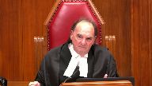
And, and the respondent knew that perfectly well.
And there’s almost a case, it seems to me, of, and I say this with respect, but a bit of gaming the system, which is, let’s wait and see what the decision is of the trial judge on this financial matter.
And, and then, if we win, great.
If not, then we better do something right away quick to plug the hole.
And I don’t think that’s the way litigation, frankly, should be carried out.
What’s your position on that?
Speaker 1 (00:08:00): Justice Moldaver, we absolutely agree, we submit that the condition of due diligence in the Palmer test is undoubtedly relevant in the present case.
Justice Brown (00:08:12): Justice Moldaver understate it.
It’s not just wait until the end of the trial process, but then wait until the end of the Court of Appeal hearing, see how it went, and then pull the rabbit out of the hat at the very end that, you know, great news from the Bank of Debt.
Speaker 1 (00:08:30): We submit that what the court of appeal allowed is for the respondent to correct his record on appeal and relitigate the same issues that were in front of the trial judge.
Justice Rowe (00:08:43): Now, my two colleagues approach this in their questions, probing from the direction of picking up on your point that there should be due diligence with respect to what has been labeled new evidence as opposed to fresh evidence.
I put to you that there’s another way to read the first criterion.
And that is that it simply isn’t relevant at all.
And that to incorporate a due diligence element for new evidence is to vary and complicate a test which does not require any variation or complication.
Simply say, one, isn’t relevant to evidence which did not exist at the time of the trial.
And look at two, three, and four.
Is that not an alternative?
Speaker 1 (00:09:43): In cases where the new evidence is impossible to adduce at trial, unforeseeable, for example, then, of course, the Palmer framework is to be laxed in the presence of what we could describe as purely new evidence.
What we submit, however, is that in this case, the evidence that is described by the Court of Appeal as new should still be subject to a degree of due diligence because it could, with proper care, have been adduced at trial or created so that it could be adduced at trial.
Justice Côté (00:10:21): I could agree with you if we were in a civil or commercial law case, but here we are in a family law case, and I would like to know your views about what the Office of the Children Lawyer is saying about that.
They say that if one or both of the parents fail to exercise due diligence in obtaining and submitting important evidence relating to the child’s best interests, then the Palmer test has to be applied in a flexible manner.
So do you agree that we should make a distinction between a family law case and another type of case?
Speaker 1 (00:11:04): Yes, I’ll say a word or two about flexibility in the family law context.
We submit the intervener, the office of the children’s lawyer, rightly points out that in cases involving the best interests of children, the Palmer conditions apply with some flexibility.
This makes perfect sense.
However, we submit flexibility is not a license to simply disregard the Palmer condition.
This is clearly stated at tab 16 of our condensed book by the Court of Appeal for Ontario in H.E. At paragraph 72, first sentence, the court explains that the more flexible approach to fresh evidence in matters relating to child welfare does not, however, render all proffered fresh evidence admissible.
The factors initiated in the Palmer test remain relevant.
Palmer’s framework has been tested over 40 years now and is it works.
Justice Moldaver (00:12:03): Well, this is what I want to ask you again.
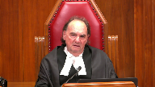
I mean, we, we lighten up on the due diligence, certainly in criminal law as well, uh, where the interests of justice warranted.
And we basically look at the other three tests, primarily the one that says the verdict could have been, could well have been different.
But you said something a moment ago that I just want to clear up now.
You said that even if the Court of Appeal was right in introducing, letting this evidence in, they still should not have interfered.
And that goes contrary to the law that I thought, because if they’re letting it in, then they’ve been satisfied that steps two, three, and four minimally have been met by Palmer.
And if they haven’t been met, it doesn’t go in.
So I’m just trying to clarify what you said.
If they let it in, it seems to me it’s fatal.
There’s got to either be a new trial or a new order.
At least that’s the way I understand this to work.
But help me out if I’m wrong.
Speaker 1 (00:13:07): So, let’s go back to tab five then, the Palmer test.
And let’s look at condition four.
It must be such that if believed, it could reasonably, when taken with the other evidence adduced at trial, be expected to have affected the result.
So to answer your question, Justice Moldaver, what we would say is the threshold is different for admitting, and then once admitted, treating the evidence before the record.
In this case, however, another flaw in the Court of Appeals’ reasoning is that once the evidence was admitted, the Court of Appeal then proceeded to displace findings of fact, re-weighed findings of fact.
Justice Rowe (00:13:59): Pardon me for interrupting but I’m trying in my own analysis to keep distinct the two questions of whether evidence of this nature should be admitted and keep that distinct from the standard of review which I think you’re about to embark upon because in my view, even if you let in new evidence, you can’t abandon the standard of review.
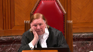
It doesn’t disappear just because there’s no evidence.
Speaker 1 (00:14:31): No, we we agree. We agree.
The steps for admitting the new evidence is prior to the step of determining whether it has an impact, so whether the issue should be remitted to the trial for determination or whether the court finds itself in a position to either confirm or modify the order.
Justice Kasirer (00:14:56): Maître Bosse, I’d like to ask you a question about the context in which the problem arises, the new or fresh evidence problem arises.
You raise this in your factum at paragraphs 30 and following, and I think it’s absolutely a key and a preliminary issue as to what the avenue for judicial review of the trial decision is in the circumstances where children or support is at issue, an ongoing problem.
If it’s a traditional appeal based on a reviewable error committed by the trial court, you can imagine the Palmer test being applied in one way.
But if in fact the parties go to the court of appeal under the guise of an appeal, and what they really want is a variation order, what they really want is not to show a reviewable error by the trial judge on the basis of the record that was before him or her at the time, but they want to show a change in circumstances since that time, surely that’s a key preliminary issue that a court of appeal has to look at before they blast on and decide whether the new evidence or the fresh evidence is admissible or not.
So when you have what is really a variation order as opposed to a traditional appeal, well your attitude to new evidence is gonna be completely different.
It shouldn’t be before the court, it should be before the superior court that has jurisdiction or the court that has jurisdiction at trial.
I’m wondering where that fits into your analysis.
Speaker 1 (00:16:43): Thank you for your question, Justice Cazira.
First, I would like to take the court to tab 15 of our condensed book in Riel.
This is in the context of family law.
It’s a very specific context.
And here at paragraph 20, the Saskatchewan Court of Appeal explains that admittedly, fluid circumstances and late breaking developments have often resulted in applications to admit fresh evidence.
However, generally speaking, an application for fresh evidence must not be a way of re-litigating the same issue on substantially the same evidence that the trial judge has already weighed and determined.
That is, the application should likewise not be an attempt to use this court’s concern for the best interests of the child to rebalance or reweigh differently substantially the same evidence dealt with by a trial or chamber judge.
It should also not be in substance a disguised application to vary.
Now, we agree that there is a legislated properly tailored route to deal with these situations like the one in this case, and that is application to vary.
If I might take the court now to tab 18, in CRH, the BC Court of Appeal explains at paragraph 27 that generally speaking, the proper course for the challenge of the order on the basis of events subsequent to the order is a variation application.
The court here cites to Hollenbach a case where evidence of the father’s current financial situation was not admitted as fresh evidence on appeal because the new information properly belonged in a variance application.
So we agree that what happened in this case, we would say, is a disguised application to vary.
Justice Martin (00:18:56): So is this the first question that should be asked before we even get into an assessment of whether it’s fresh or new evidence or the application of the Palmer test?
Should we say is this in fact an appeal that deals with the trial judgment on the record or is this in fact a disguised variation application being taken before the court of appeal?
Speaker 1 (00:19:24): Yes, this would certainly avoid the circumstances which arose in this case to happen again, and we would agree.
Justice Rowe (00:19:35): I mean, one way for a court of appeal that is being mindful of its proper role and the proper standard of review is when a party comes in and says, I’ve got some new developments.
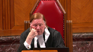
Things have happened since the trial decision.
And it would be open, I think, to the court of appeal to say, well, that’s nice.
But if you want to take into account new developments, go back for a variation order.
If you want to say that the trial judge erred as a matter of principle on the record that was before the trial judge, you know, please proceed with your appeal.
I mean, there’s a kind of a gatekeeper function, it seems to me, that the court of appeal can carry out here if it is mindful, properly mindful of its role and giving effect to the standard of review.
Speaker 1 (00:20:34): Yes, the appellant would agree with this as well.

This court has clearly explained the deference time and over again that appellate courts should exercise.
We would submit that was not properly conducted in this case.
Justice Brown (00:20:53): But this isn’t, Justice Roe wasn’t asking you about deference.
Justice Roe was asking you about what a court of appeal should do when hearing an appeal from a custody matter or on a family matter, and there is evidence that suggests a change in circumstances.
So let’s, you know, that’s not a question of deference, that’s a question of how you channel that analysis.
Do you deal with it as a fresh or new, do you deal with it under Palmer, or do you send it back?
And so let’s, just to kind of give it some concreteness, paragraph 38 of the court of appeals decision here.
Court of appeals says, the new evidence which is filed on appeal reveals that there has been a change in circumstances.
Now they don’t go so far as to say a material change, and of course that wouldn’t be their finding to make.
But for that same reason, would it be your submission that court of appeals should have dropped the pen at that point, send it back to the BC Supreme Court, which is I think what Justice Roe was suggesting, or is there anything that the court of appeal could have done at that point beyond that?
Speaker 1 (00:22:22): Thank you for this clarification.
That is our submission that at that point the gatekeeper role as mentioned by Justice Roe should have led the Court of Appeal to send the matter to be treated properly under the proper procedural route, which is a variation order.
Overlapping speakers (00:22:42): Oh, go ahead. Go ahead.
Justice Karakatsanis (00:22:45): But are you suggesting that then the Court of Appeal should not deal with the appeal before them?
I guess there’s a difference between making a determination on the appeal, whether the trial judge made an error or not, whether that needs to be put aside, and sending it back.
It makes a difference, doesn’t it, what order is in place at the time you’re dealing with the variational application?
Speaker 1 (00:23:21): Yes.
These are heavily fact specific.
In our case, it is definitely our submission that it should have been sent for variation, and the appeal shouldn’t have not not have been dealt with because through Palmer because our submission is that the evidence should never have been let in, not only because it fails.
The first condition of Palmer but also because it fails.
The fourth condition of Palmer and I will get to that later.
But each case is obviously, especially in family law are different and they’re subject to high discretion.
And so there is there will be some discretion that has to be exercised by the Court of Appeal seized with these two routes, whether to send back for variation, or to deal with the new evidence being sought to be adduced through the Palmer framework.
Justice Côté (00:24:20): In this case, Mr. Basset, the Court of Appeal in Paragraph 64 acknowledged the presence of the two routes, the two possible routes, because they said in such circumstances it is open to this court to either make its own determination of the best interest of the children or to remit the matter to the trial court.
And in this case, they said remitting the matter would have caused additional expense and delay and emotional uncertainty for the parties and their children.
So this is why the Court of Appeal decided to follow one of the routes.
So you seem to acknowledge that.
I’m not asking you to acknowledge that what was decided here by the Court of Appeal was right, but there is a possibility for a Court of Appeal to make its own determination if it accepts the new evidence.
Speaker 1 (00:25:11): Yes, once the new evidence, let’s presume that the new evidence meets all four Palmer criteria, then the Court of Appeal can look at the record and make its determination or can find itself in a position not to be able to make a determination and then remit it for trial.
This is what happens in a lot of these cases.
However, in this case, the Court of Appeal was only allowed or was only able to do that by displacing and by minimizing many findings of fact made by the trial judge on an issue completely unrelated to the new evidence that was adduced.
I’m going to ask a question, Mr. Chairman.
Justice Jamal (00:26:01): Mr. Bosse, it really relates back to what Justice Caracatanas asked, and really relates also to what Justice Cote just raised.
The court had before it a motion to adduce fresh evidence.
Surely it should decide that issue, and if it decided that issue in your client’s favor, that would have been the end of the matter, and it wouldn’t have led to a further round of litigation rather than send it back to the trial court.
That would have been the end of the matter.
You raised the due diligence criterion, but as you know, that is not a condition precedent to the admission of fresh evidence.
That’s been established since the back.
The others are conditions precedent.
At the end of the day, your appeal, the appeal should have been, on your argument, should have been dismissed on the basis that criterion four of Palmer, and that would have been the end of the matter.
So I’m sort of puzzled as to why you’re saying it should have been dismissed and sent back to a variation application.
That just introduces another layer of complexity, arguably, with a prior question of evaluating the pith and substance of the motion rather than looking at what is actually before the court, which is a request to reduce fresh evidence.
Speaker 1 (00:27:13): To be clear, Justice Jamal, our submissions about the variation order was in responding to more generally cases similar.
If we are in the specific facts of this case, our submission is that, as you say, the motion should have been rejected.
So I will take this moment then to turn to the second way the Court of Appeal erred in allowing the respondents application to admit new evidence, which is under the fourth condition of Palmer.
So after broadly rejecting the applicability of the Palmer test, the Court of Appeal at tab four, however, accepted that paragraph 31 that it has at times considered whether the new evidence would change the result at trial, or could reasonably be expected to do so.
That is the fourth Palmer condition.
The appeal then at paragraphs 32, 33, cited to several cases stating that new evidence will be admitted only in rare or exceptional circumstances.
Several of these cases, in fact, state a stricter test for the admissibility of new as distinct from fresh evidence.
It is also noteworthy that these cases state that reasonable diligence is a condition for the admissibility of new evidence.
So why does a stricter test apply to new evidence?
At tab 17, the Court of Appeal in Foch highlights two reasons.
First at paragraph 20, fourth sentence, because in the family law context, the proper course for a challenge of an order on the basis of events subsequent to the order is a variation application.
This is a reason to apply a stricter test to approach the admission of new evidence.
And second, paragraph 21, last sentence, because to permit the admission of an appeal on appeal of new factual circumstances that occur after trial judgment would offend the principles of certainty and finality.
Now, in this case, if we go back to tab four, the Court of Appeal, paragraph 34, relies on Foch and notes that one exceptional circumstance where the evidence may be admitted is where the judge made assumptions about future events, but new evidence establishes those assumptions to be incorrect.
However, we submit that new evidence should only be admitted where it can reasonably be expected to have affected the result.
That is the Palmer fourth condition.
In the present case, contrary to the fourth Palmer condition, the new evidence submitted by the respondent could not reasonably be expected to have affected the result.
If we turn to tab two, the reason of the trial judge, trial judge was very explicit that his primary reason for allowing the appellant to relocate with the children was his assessment of the relationship between the parties and the implication it has for the children.
Let’s look at paragraph 30 and 31.
The judge there explains that there are two issues arising from the evidence that significantly impact my analysis of the children’s best interest.
The first, although the less significant of the two, is the party’s financial situation, particularly as it pertains to the house.
The trial judge then made several findings on that issue, which brings us to paragraph 41, first sentence.
The second issue I find particularly significant is the relationship between the parties and the implications it has for the children.
Now the respondents to evidence of financial circumstances did not touch any of the findings of the trial judge on what he considered the most significant issue underlying his decision.
The trial judge added at paragraph 43, first sentence, that he had further concerns as to the relationship between the appellant and the respondents parents.
The new evidence in this case has nothing to do with this aspect of the relationship between the parties either.
On top of that, the supposedly new evidence added little if anything new to what was already before the trial judge on this, quote, less significant, end quote, issue.
That is the party’s financial situation as it pertained to the house.
For instance, the trial judge found that the house was an ongoing construction project and while habitable was a working environment, not a living environment.
The new evidence in this case is completely silence about the house’s habitability.
It is simply a continuation of the kind of evidence that was already before the trial judge.
In such circumstances, the new evidence submitted to the Court of Appeal could not reasonably have be expected to have affected the result, thus not meeting Palmer’s fourth condition.
So we would submit, Justice Jamal, that that was the proper treatment of the motion to adduce new and fresh evidence in this case.
Speaker 1 (00:33:08): If I may step back to the issue of the first condition of polymer and make a few submissions on this point.
So we submit the condition of due diligence is undoubtedly relevant in this case.
That is because the trial judge repeatedly stressed the lack of due diligence on the part of the respondent in putting evidence of financial circumstances before the court.
So let’s go back to, well, I think we are in tab two.
So here are three examples.
At paragraph 32, regarding the ongoing work on the house, the judge notes that the respondent has not prepared any kind of itemized budget and produced no written estimates for the work that remains to be done.
At paragraph 35 now, last sentence, regarding the need to refinance to buy the appellant’s interest, the court notes it had no evidence of any bank’s willingness to refinance given the current condition of the house.
The third example, paragraph 38, regarding the respondent’s father helping him pay his debt to the bank, the trial judge noted that the father had provided no explanation for having waited until the eve of trial to make inquiries of banks.
The father had no commitment letters regarding finances and that neither of the banks consulted was giving a copy of the appraisal.
It is also noteworthy that the respondent only applied to introduce related new evidence at the end of the appeal hearing, yet another sign of his lack of due diligence.
Even if the respondent’s application to the court of appeal arguably involves, in part, the use of the appraisal, the appraisal of the appraisal of the appraisal of the appraisal of the appraisal of the appraisal of the appraisal of the appraisal of the appraisal of the appraisal of the appraisal of the appraisal of the appraisal of the appraisal of the appraisal of the appraisal of the appraisal of the appraisal of the appraisal of the appraisal of the appraisal of the appraisal of the appraisal of the appraisal of the appraisal of the appraisal of the appraisal
Overlapping speakers (00:35:04): and
Speaker 1 (00:35:05): new evidence as opposed to solely fresh evidence of financial circumstances, it cannot be the case that due diligence is irrelevant to the admissibility of this evidence, especially not in a case like this where the trial judge made multiple and specific findings of facts that the respondent lacked due diligence in preparing and presenting his case.
As the BC Court of Appeal explained at tab 25, in Stav v. Stav, paragraph 32, courts must be cautious in considering the admission of either new or fresh evidence because allowing such evidence without structure or limits takes an appeal beyond the record of trial and beyond the error-seeking function of the court with attendant uncertainty and expenses.
It also has the potential of giving a party the opportunity to make up for deficiencies in his or her case at trial.
This is specifically what happened in this case.
Our factum details at paragraphs 39 to 60 several examples of how this distinction created by the Court of Appeal in this case is neither principled nor consistent with one, the case law of British Columbia itself, two, the case law of other provinces, and three, academic commentary.
The respondent suggests at paragraph 54 of his factum that this whole issue is a matter of semantics, arguing that the Court of Appeal’s approach was appropriate whether it was a Palmer-like or a modified Palmer test, which mirrors the principles found in Palmer.
Yet at tab four, the Court of Appeal at paragraph 52 was explicit in rejecting the applicability of the Palmer test generally and the first Palmer condition specifically.
We submit this is a doctrinal error.
Justice Kasirer (00:37:24): Maître Bosset, can a court of appeal ever entertain new evidence that reveals a change in circumstances to avert to the paragraph 38 that Justice Brown pointed you to earlier?
Can it ever do that?
Speaker 1 (00:37:46): Yes.
So we submit that this would be through the operation, the application of the fourth condition of Palmer.
Now, in the family law context, where the best interest of children is at play, the determination of whether the new evidence has an impact on the determination of the case, and therefore the best interest of children, is the trigger, is how the flexible approach should be triggered.
That could lead to new evidence being admitted on appeal.
And then the Court of Appeal would have to look at the record as it exists.
But on the issues that are untouched by the new evidence, the record seen and analyzed by the Court of Appeal would have to be the one that includes the findings of fact made by the trial judge, not the ones that the Court of Appeal decide to reweigh absent new evidence regarding these issues.
Justice Rowe (00:38:51): Yeah, there was a quotation from Oscar Wilde which I always find quite instructive.
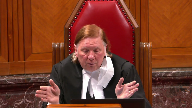
I can resist everything except temptation.
And I wonder if we’re tempting, if we follow the line of doctrine that you’re suggesting to us, we’re tempting courts of appeal too much when we say, ah, this is something which could have affected the result.
We open our doors to you as opposed to saying, no, no, no, we’re going to determine this appeal on the record and see whether the judge made an error on the evidence before him or her.
And if you’ve got new evidence, go back and seek a variation order.
Because it seems to me that if, to follow the logic of your suggestion, if there’s further evidence, new facts come into existence that could have affected the result, you’re saying that it’s open to the court of appeal to say, come here, come here, we’ll decide that.
You don’t need to go for a variation order, you can come here instead.
I’m not sure that that’s a sound approach.
Speaker 1 (00:40:13): Um, it would, in, in cases where the, the new evidence is admitted, uh, the cases would be best remitted to the trial judge for reconsideration in light of the new evidence. Um,
Justice Moldaver (00:40:30): Well, excuse me, you could get a mix.
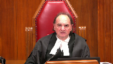
You could get a hybrid.
You could have legal issues intertwined with fresh evidence as well.
I mean, there may have been some overriding issue about the admissibility of some other evidence altogether as to whether it should have been admitted at all in the case.
And that’s a legal question that the court of appeal would have to decide.
But there also could be a fresh evidence application relating to something else.
So the notion of severing them completely doesn’t sit so well with me, it seems.
And also, by the way, while we’re on this topic, there could be some new evidence that is so fundamental to just change the whole picture.
Now, you could perhaps go back to the original judge with that evidence.
And I’m thinking not in a child custody case, but let’s say a paternity suit, where all they had before was just, you know, the blood classified.
And then suddenly some fresh evidence based on new developments in DNA that makes it absolutely clear that it is or it isn’t someone’s child.
I mean, why do we have to go back for…
We could go back for a variation, but I don’t think it would be wrong to go to the court of appeal either.
Speaker 1 (00:41:59): So first, I would say that the Palmer framework works.
It has worked.
There’s no reason why it cannot continue to work.
If, like you say, Justice Moldaver, the new evidence, and I’m quoting from the fourth condition, be such that if belief could reasonably, when taken with the other evidence adduced at trial, be expected to have affected the result, then the new evidence should go in.
Um, if I may take…
Justice Kasirer (00:42:36): the court.
I think there may be a distinction between a circumstance like paternity, I’m not sure, but it strikes me as a one-off issue where you’d want to be able to, if new evidence brought to light, DNA evidence say that brought to light a change, there’s a difference qualitatively different character of that type of dispute as the one that’s before us now.
Custody, relocation, support issues are the same thing where the problem is an ongoing one and the danger that Justice Roe alluded to earlier has a different character because the circumstances are always going to change.
The kid is always going to get older, the needs and the ability to pay of debtors and creditors of support are always going to change and you want to stop the Court of Appeal on this line of thinking, you want to stop the Court of Appeal from usurping the role of a Superior Court in variation, that doesn’t apply in a one-off, you know, on the grounds of divorce or paternity or a property division case.
It seems to me that they’re qualitatively different, aren’t they?
Speaker 1 (00:44:02): Yes, it’s a fair point.
It sounds like those hypotheticals are cases where the new evidence would have an effect and therefore would be admitted.
But here, the new evidence does not go to the most important issue that the judge specifically stated was on his mind when making his determination.
Of course, there could be.
Justice Moldaver (00:44:26): could be a situation where, for example, fresh evidence is dad’s been charged with fraud, and he’s in custody, and he’s not getting bail.
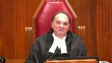
I don’t think that’s prospective, retrospective, or whatever.
That would be, in my view, a fundamental reason for altering an order that gave dad custody.
I would have thought, but maybe I’m wrong.
Speaker 1 (00:44:56): Maybe it’s best if I use examples that I’d like to take the court to tab 19 in Thompson page 95 of our condensed book.
Here Justice Twaddle of the Manitoba Court of Appeal explained that if I had thought the risk of the child being removed from his immediate environment was a relevant consideration, I would have proposed admitting the new evidence.
The fact that it could have been made available for the hearing would not have deterred me.
And so in other words, if the new evidence would have affected the result, the court would have applied a more flexible approach and would have admitted the new evidence.
Justice Jamal (00:45:42): Isn’t that the point, then, that you’re making?
And I think to Justice Moldova’s point, it’s not a jurisdictional limitation of a court of appeal to make findings of fact on appeal.
They all have the statutory power to do that.
The question is really when it should be exercised.
So because of the Oscar Wilde concern, they have that statutory jurisdiction.
You don’t slam the door.
You recognize that it can be exercised in an appropriate case, and you rely on the good judgment of courts of appeal to do so sparingly.
But it exists, and all you’re calling for is a proper application of Parma.
Justice Kasirer (00:46:13): We agree.
Speaker 1 (00:46:19): May provide the court with another example at tab 20.
In Morton, the Court of Appeal for Ontario at paragraph 14 rejected the motion for fresh evidence here because it was available at the time of the relocation trial and more importantly the court did not see how it would have made any difference to the relocation order.
It is the same in this case.
The Court of Appeal should have found that the new evidence could not have made any difference to the relocation order.
So flexibility in admitting new evidence does not make the Palmer framework irrelevant.
Justice Côté (00:47:04): So, Mr. Bosse, just to be clear, so you say it would not have made any difference in this case because of the fact that the financial aspect regarding the house was not the primary issue.
Is it because you say that anyway there was a primary issue which was the relation between the parties?
So, whatever happens with the financial situation, you say would not have made a difference because it was not the primary issue in the case.
Speaker 1 (00:47:35): Precisely.
The judge had witnesses, evidence before him, he weighed, he heard the witnesses and he specifically says there are two issues and one I find less significant.
The main issue is the relationship between the parties and then makes many findings of facts on those issues.
The new evidence does not touch any of the findings the trial judge made on what he considered the most significant underlying issue underlying his decision.
It also did not touch on this other aspects of the other aspect of the relationship between the parties, that is the relationship between the appellant and the respondent’s parents.
And we would add that not only that, but the new evidence only partially touched on the financial aspect.
It was silent about the house’s habitability.
It was merely just a simple continuation of the kind of evidence that was already before the trial judge.
And so in this case, yes, the new evidence should not have been admitted.
Justice Côté (00:48:46): So on the primary issue, you say that the Court of Appeal re-weighed the evidence and should not have done that.
I understand your point, but when we read paragraph 83 of the Court of Appeal decision, can we not say that essentially the Court of Appeal did not change the findings of FAC, of the trial judge, because it seems that the Court of Appeal accepted that there was a, they call that a friction, there was some friction between the parties.
The Court of Appeal seems to have been in disagreement with the inference found by the trial judge, because they say if that friction was not an impediment to the parties parenting together, if Monsieur would have moved to 12-K, why should it be so important if, because if the parties could both parent in 12-K, not withstanding some ongoing friction, it is hard to understand how that same friction would support a relocation order.
So is it not implicit in that, that it was, the Court of Appeal considered it was like a misapprehension of the evidence?
Speaker 1 (00:50:08): No, the only way the Court of Appeal could have made its decision is by substantially reweighing clear findings of fact made by the trial judge.
So if we go back to tab 2 then, paragraph 41B, at the page 15 of our condensed book, we see the trial judge here largely accepted the appellant’s account of being assaulted by the respondent during the argument that precipitated the separation.
The trial judge carefully explains the factual context from which he drew this conclusion.
At paragraph 41D, at page 16, bottom of the page, the trial judge makes findings regarding a nude selfie of the appellant that the respondent had filed in court.
The trial judge had no hesitation accepting that the appellant was humiliated by the photo being put in court documents and that this violation of the appellant’s privacy served no purpose but to humiliate her.
It was abusive, profoundly, and profoundly offensive.
A third example at paragraph 10, the trial judge finds that the respondent was controlling as to financial issues, questioning the appellant and demanding that she obtain his permission over expenditures and even over her activities, often with abusive language.
The trial judge also found that at the end of this paragraph that the appellant was subject to the respondent’s overbearing personality during their marriage and that there is a significant possibility that she suffered from some degree of emotional abuse.
Now, despite these clear findings, if you go back to tab four, paragraph 70, despite these findings, the Court of Appeal at paragraph 71st sentence felt that the trial judge’s concerns warrant some context.
And paragraph 71, second sentence, that the seriousness of the circumstances are attenuated by certain realities.
What are these realities?
71, last sentence.
The Court of Appeal says that the appellant’s counsel at trial did not rely on the issue of the relationship between the parties as a matter of any real concern.
And paragraph 72, first sentence, that many of the issues the trial judge was concerned about had taken place, quote, in the past, end quote.
As for the issues being in the past, I wish to highlight two things.
First, the trial judge specifically found at tab two, paragraph 41B, top of page 16, that the respondent’s continuing blame of the appellant, his portrayal of her as the aggressor, and his insistence that her story of being assaulted was a fiction, seemed likely to be an ongoing source of acrimony.
Second, about five months later in an interim order, which is at tab three of our condensed book, Justice Baker found communication from the respondent to be consistent with the finding that Mr. Justice Saunders made, which is that the appellant was subject to the respondent’s overbearing personality during their marriage.
Justice Baker further found that the email and text messages between them were evidence of the respondent’s desire to control the appellant, and found his position to be extremely unreasonable in the circumstances.
Now, throughout paragraphs 69 to 90, the Court of Appeal blatantly reweighed evidence that had been carefully considered by the trial judge and that was unrelated to the new evidence admitted on appeal.
The Court of Appeal painted an entirely new picture of the relationship between the parties with no evidence on this issue.
This was an error.
And on top of that, the Court of Appeal identified no material error in the trial judgment warranting appellate intervention.
The Court of Appeal’s decision to substitute its own judgment absent any material error in the trial judgment was a further error.
This is precisely the kind of error described in Kane by the BC Court of Appeal itself at tab 12.
Let’s look at paragraph 60.
First sentence.
In my view, the judge erred in law by creating a new evidentiary record which he made his own findings of fact to support making a different decision from that of the trial judge after having accepted that the inference drawn by the trial judge were open to him to make and in the absence of any material error.
In doing so, he effectively converted what should have been an appeal on the record into a continuation of the trial through the admission of new evidence.
Such an approach exceeds the scope of appellate review jurisdiction.
Next page, third line down after the semicolon, quote, the purpose of the appeal should have been to identify material reversible errors, not to allow one party to make up for potential deficiencies in the case they presented at trial.
Justice Kasirer (00:56:11): Okay, and I’m sorry to come back to this.
I’m sort of losing the thread of your argument, because earlier you said it wasn’t a jurisdictional point, and here you’re pointing us to dicta that says such an approach exceeds the scope of the appellate review jurisdiction because the judge created a new evidentiary record, which is right.
Is it we can trust Palmer, or is this a jurisdictional point?
Which are you arguing?
Speaker 1 (00:56:43): The evidence should not have been let in because it does not meet Palmer.
If, however, the evidence was admitted, the way the Court of Appeal conducted the review with the new evidence is also an error.
It exceeds jurisdictional.
Justice Rowe (00:57:02): Now are we mixing up jurisdiction with standard of review?
Speaker 1 (00:57:11): Um, I’m going to try to reframe, uh, the Court of Appeal erred in allowing the evidence to be adduced.
That is our first, uh, submission, first error committed by the Court of Appeal, and it erred in doing so by one, uh, not applying the first condition of Palmer and two, by not applying the fourth condition of Palmer properly.
Now, if the, uh, the evidence was properly admitted, which we don’t admit, uh, the Court of Appeal also further erred in how it reweighed the findings of fact.
It displaced clearly made findings of fact by the trial judge, and only in reweighing evidence that was untouched by the new evidence and displacing findings of fact that were completely untouched by the new evidence could the Court of Appeal achieve this result of overturning, uh, the trial judges.
Justice Moldaver (00:58:12): So that seems to be an argument that says they should’ve sent it back to the trial judge, the second one, if I’m understanding this right.
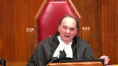
And that was my first point in all this.
Once you admit fresh evidence, which as we’ve established is within the jurisdiction of the Court of Appeals, it seems to me there’s only one of two orders that can be made.
One, we send it back and not do what the Court of Appeal did here, which as you say rewrites the script on what the trial judge found to be the primary issue.
Or if it’s so fundamental, they deal with it right on the spot without sending it back anywhere.
That will be rare probably.
So I’m just trying to see where this goes.
Speaker 1 (00:59:07): Yes, there are cases where the new evidence will meet the Palmer test.
It could reasonably be expected to have an effect on the result.
And the court decides to let it in, maybe because we find ourselves in the context of a more flexible approach as well.
But then once the evidence is in is before the court of appeal, what the court of appeal has to look at is the record which was constituted by the trial judge.
Findings of fact that are not affected by the new evidence should remain as such.
They should not be displaced.
They should not be reweighed.
And in in front of in that scenario, a court of appeal could say, well, this financial evidence, even though I thought might have an impact once I weigh it with the findings of fact made by the trial judge, doesn’t change the result.
And we have a more flexible approach.
Justice Moldaver (01:00:03): approach.
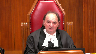
I’m missing this.
You’ve got in family law a route to go where there’s a material change of circumstances back to the original judge.
If anything, it should be less flexible because you’ve got a built-in route to correct something or to alter something.
We don’t have that in criminal law.
You can’t just go back to the trial judge and say, hey, let’s take another look at all this.
But you have a flexible route here.
So I don’t know why we’re talking about creating a more flexible approach for the admission of fresh evidence at a court of appeal level.
In fact, if anything, as I say, I think it should be less flexible because there is generally another way to go.
Speaker 1 (01:00:53): we agree that the proper route is the application to vary.
Now there’s case law, there’s ample case law that does recognize this flexible approach.
Part of why that flexible approach is recognized is because it affects the interests of children, which are often time not parties to family law litigation. So…
Sorry is there a…
Justice Moldaver (01:01:14): situation where you couldn’t go back for a material change that would also be fresh evidence that the Court of Appeals should…
You’re putting it in terms of this is really serious for the benefit of the children. I agree.
It could be.
But then why should it be more flexible?
You’ve already got effectively two routes, it seems to me.
So why are we sort of creating new rules at the appellate level and playing around with Palmer when, in my respectful view, there’s no need to do that when there’s another avenue clearly open if there has been really a material change?
I’m missing this.
I’m sorry.
Speaker 1 (01:01:57): Yes, this would be in exceptional cases only, not this case for sure.
And you are right, you mentioned that this would be a case where remittance would be appropriate.
We submit at most the issue should have been remitted.
Thank you very much, your time is up.
Justice Wagner (01:02:18): time is up.
Thank you.
Ms. Hunter.
Speaker 2 (01:02:27): Thank you Chief Justice, Justices.
Family violence is an endemic and gendered social problem in Canada.
On behalf of West Coast LEAF and RISE Women’s Legal Center, I will focus my submission on the approach to be applied to the admissibility and use of new evidence on appeal involving best interests of children where the trial order made findings of family violence.
And I say the issue arises in this case because the trial judge made three findings that are properly characterized as family violence under the expansive definition in British Columbia’s Family Law Act, Section 1, and in the Divorce Act, Section 2.
And Council Bassay has taken you through those.
The three are the finding of a significant possibility of emotional abuse in relation to controlling and overbearing conduct of the husband towards the wife.
The second is a physical assault precipitating the separation.
And the third we described in our factum as litigation abuse and that includes the filing of the nude selfie in the court registry which the trial judge characterized as abusive.
There was a future-oriented aspect to the trial judge’s findings in this regard.
The trial judge found at paragraph 41 of his reasons that the relationship between the parties and the implications that it has for the children was particularly significant and he was not optimistic that the relationship would improve to permit the parties to work together to promote the children’s best interests.
And so my submission is in two parts and the first picking up on Justice Moldaver’s point a moment ago on the question of whether flexibility should be more or less in family cases involving new evidence.
And I say that in exercising, in admitting new evidence, courts should exercise caution where there’s our findings of family violence made by the trial court.
There may be cause for flexibility in the fresh evidence context where the due diligence exception is at play but in the new evidence context where there’s a change, the material change in circumstance test is such that there is a different process and there is no need for increased flexibility and there are reasons that I will get into that Militate in favor of a cautious approach.
The second part is that where courts do admit new evidence relating to the circumstances of children, they should be required to admit a new evidence of all of the circumstances that gave rise to the findings of family violence and ensure that those findings are similarly updated.
So on the first point there are three reasons that we say that appellate court should exercise caution in admitting and considering new evidence where the child judge has made a custody or relocation order in a context of family violence.
The first is that where family violence is taken into account by a trial judge in making a parenting or relocation order the spouse and usually the wife who has experienced family violence has already overcome barriers to disclosure and the impediments in the legal system to such findings and we cite at paragraph 17 an article by Martinson and Jackson that has been cited in a different context by this court earlier this year in Colucci which describes unproven and unfounded assumptions that remain present in judicial decision making including that violence against woman by a man does not have an impact on the children and has nothing to do with his parenting ability and that abuse will likely stop once the relationship ends so there’s no risk of future harm.
The second is that trial judges are better placed to assess the dynamics between the parties and to observe their conduct during the litigation process.
The third is that cases involving children must take into account the harm of indirect exposure to family violence and there’s good evidence and we we cite some of it in our factum at paragraphs 8 and 12 that exposure to family violence including where family violence occurs between spouses causes harm to children.
The second point is that in the event further evidence is admitted on appeal we submit there must be an opportunity to file updated evidence on all the circumstances that the trial judge has found impact upon the best interest of the children in the analysis that gave rise to family violence findings and I note that there was an unusual aspect to the process that was followed in this case in that the ordinary process in the British Columbia Court of Appeal is 30 days notice and discussion at the outset of the appeal as to the admissibility of the new or fresh evidence.
It appears in this case it happened at the end without an opportunity to file further updating evidence on the other factors that the trial judge had found were more important in terms of the decision on on relocation and so in our submission if new evidence is to be admitted on appeal we submit there should have been an opportunity to file updating evidence on the circumstances giving rise to the findings of family violence.
I note the time there are no questions those are my submissions.
Justice Wagner (01:07:36): Thank you very much.
Thank you. Mr. Ross.
Speaker 3 (01:07:42): Thank you Chief Justice and Justices.
The Office of the Children’s Lawyer intervenes in this appeal to ask this court to maintain flexibility in the use of fresh and new evidence on appeals involving children and cautions against bright line rules that could impede appellate courts from having crucial information about children’s updated circumstances.
Justice Rowe (01:08:02): OK, what about disputed facts?
A puts in an affidavit saying, here’s a new reality.
B puts in an affidavit saying, no, you got it all wrong.
How do you deal with that on appeal?
Speaker 3 (01:08:18): So if the courts, so we say typically new evidence isn’t used to interfere with the fact-finding process.

Truly new evidence that is just new circumstances isn’t used to intervene with the fact-finding process of the judge.
It’s just new events have occurred.
We say it has broader purposes, which I will get into, but if the court, we still say there’s a path to go in for new evidence, but again the court needs to consider is it best place to make the decision?
Does the evidence material impact the child’s best interests?
And that could be simply changing a few orders to reflect the current circumstances.
It could be where there’s no other review order in place, review possibility in place, or there’s a delay and an ability in a child protection case to go in and ask for a review.
It could be because the court needs to step in and make an imminent decision about the child.
We do say that there’s a path, but typically when we’re talking about new evidence, what we’re talking about is the court having the proper context to properly situate the appeal to update the court about new circumstances and events that affect the child and the court’s decision to confirm the correctness of a lower court decision.
It can help inform whether or not to intervene, and if so, how.
It can be used to craft an appropriate remedy or order.
In some circumstances, as I mentioned, it may, there is a path to making a determination based on new evidence, even in the absence of an error.
But again, that’s why we say it’s important to sort of distinguish between the two concepts.
Fresh evidence is introduced to interfere with or to question the fact-finding process as it stood at the time of the trial.
But again, it has broader purposes on appeals that are useful for appellate courts in making all of its determinations relating to children, again, whether to step in or not.
Justice Côté (01:10:18): You just said that new evidence can be admitted even if in the absence of an error in the trial judge’s decision.
Overlapping speakers (01:10:31): Yes.
Justice Côté (01:10:32): How can it be, if you, because if there is an appeal, one must presume that the appellant will demonstrate, will show an error in the trial judge decision.
Speaker 3 (01:10:46): Right.
There will be claims that there are errors, but even if the court determines that there is no error, we say there’s still a path for the court to make the decision based on new evidence.
Again, if it materially affects the child’s best interest, and the court has to consider, are we best placed to make this determination, or is it better to be dealt with by a court when there is a review mechanism?
But there will be cases where it’s clear, it’s obvious, where again, the court is just simply changing a few orders to reflect the child’s reality, and we ask this court not to completely close the door.
The court does have the authority to do it in legislation across the country, and we suggest that it’s appropriate in certain circumstances.
Justice Martin (01:11:31): But aren’t you just arguing for the common place, which is after every trial judgment and every dedication of trial resources to a family law matter, there’s going to be consequences that flow from that.
And as I read your factum at paragraph 15, you outline what you say are the benefits for appellate courts.
But aren’t they just largely, many of them, taking into account what happened after the trial judgment?
Won’t that always occur?
Won’t that always mean that fresh evidence under your system is going to be before the court of appeal, whether or not any of these purposes are really part of an appellate process?
Speaker 3 (01:12:16): If I understand, I think what we’re saying is there’s more than just the error finding role of an appellate court, but when it finds an error, our submission is it needs to take into account the children’s current circumstances when it determines whether or not to intervene and how to intervene.
Justice Brown (01:12:35): But that’s but that’s
but that’s not the same
but that’s not the same thing.
What we’re talking about is where no error is identified but the fresh the fresh so-called fresh evidence removes certain assumptions that the trial judge had made then
what then what under your under your flexible model.
Speaker 3 (01:12:58): So if it’s fresh evidence that displaces the finding of fact, then you’re changing the factual matrix, and the court can go in like it does in any case and do an assessment of whether or not that tips the balance in terms of making a change.
Overlapping speakers (01:13:13): Alright, your time is up.
I don’t even understand that.
Justice Wagner (01:13:16): Thank you very much.
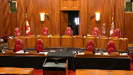
The court will take its morning break.
Fifteen minutes.
The court will take its morning break.
Please be seated.
Speaker 4 (01:14:38): May I begin?
Overlapping speakers (01:14:40): Yes, please.
Speaker 4 (01:14:41): Thank you.
I would like to begin by reciting the legislative authority for the Court of Appeal to admit new evidence.
And it’s the British Columbia Court of Appeal rules, section 31 provides that a party may adduce evidence that was not before the court below.
It gives the Court of Appeal that authority.
It does not specify any particular test or any particular analysis.
As well, section nine of the Court of Appeal Act in British Columbia gives the Court of Appeal the authority to make or give any order that could have been made by the lower court, to impose reasonable terms and conditions in any order or to make or give any order that it considers just.
As well, the Court of Appeal is empowered to draw inferences of fact.
Now, my friend suggests that there ought to be less flexibility with respect to the admission of new evidence in the Court of Appeal.
And what I say is that numerous courts across Canada, courts of appeal for several decades have relied on and made the admission of new evidence flexible and elastic as Madam Justice Southern put it in the Court of Appeal in Chabaga versus Chabaga.
And the raison d’etre for that is because these are cases about children.
And when it comes to children, the ultimate flexibility is required to ensure that their best interests are the only consideration, the paramount consideration.
Now, not only…
Justice Rowe (01:16:43): Making a distinction between jurisdiction and the rules of evidence, I take your point about jurisdiction.
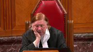
The rules of evidence, of course, can be established by the legislature, but ordinarily they are established in the common law.
And the common law is determined in a hierarchical system of courts, of which this court is at the top.
And so are you saying that Palmer does not apply?
Speaker 4 (01:17:17): no I am not saying that Palmer does not apply.
What I am saying is that Palmer must be modified to suit the subject matter of the litigation just as it is modified in the criminal law it must be and it has always been modified to some extent in family law and to underscore that submission this very court has agreed in in 1994 in the decision of Catholic Children’s Aid Society versus MC this very court affirmed an Ontario Court of Appeal decision Regenerow and this is what the Supreme Court of Canada said in 1994.
Although I doubt that Generow intended to depart significantly from the test in Palmer its approach is to be commended.
Generow is not only consistent with the jurisprudence of this court but it is better suited to the child-centered focus of the Child and Family Services Act as it recognizes having accurate and up-to-date information on the children whose fate hangs on the determination by judges of their best interests.
Overlapping speakers (01:18:39): But at page 190, Justice…
Speaker 4 (01:18:41): it was the Child Welfare Act that provided that leave could be sought to admit further evidence.
And in the Supreme Court of Canada case, the court admitted fresh evidence, allowed the appeal, and made a decision that was contrary to the court below.
Now I say that the principles espoused by this court in 1994 apply with equal force to the custody of children, particularly in cases of relocation, where as in the case at Barr, the risk of a decision that does not take into account all of the facts, including evidence that bridges the gap between the trial decision and the new evidence arising after trial, it may lead to a situation as in this case, where you have a father who lives in West Kelowna, 1,000 kilometers away from Telkwa, British Columbia, a father who was a co-parent for all of the children’s lives, who remained a co-parent after the date of separation by virtue of an interim custody order, and then a little a little about six months past that, the court again reviewed the parenting and they made a parenting order in favor of the father, and the father then had primary residence, primary custody for eight months leading up to the trial and shortly after the trial.
And therein lies the subject and the focus of the appeal that was brought to the Court of Appeal, because the trial judge applied the test in Gordon and Gertz, which is the leading case on relocation of children, but it is sorely needing updating as it applies only to parents who are either sole custodial parents or primary residence parents, because one of the fundamental principles of Gordon and Gertz is that parents should, their views about relocation, where they want to live and where they want to work, should be respected.
And that may be true, in fact that is true, where that parent is the sole custodial parent.
Justice Kasirer (01:21:06): Is it, excuse me, sorry to interrupt you, is it relevant that a relocation application be taken under as a variation order at the beginning, at the front end, that the question as to whether or not there is a material change in circumstances is at the origin of the dispute, unlike this case?
Speaker 4 (01:21:30): I’m not I’m not sure of your question.
Are you asking me whether this there should not have been appeal with fresh evidence, but there should have been a variation application?
Justice Kasirer (01:21:38): Well, you’re citing Gordon and Gertz and I’m wondering to what extent that case and cases like it are taken under variation orders and they come up through the appellate process as appeals from not an original judgement on custody but on a relocation order based on a variation proceeding.
In other words, the issue is whether the evidence discloses a material change in circumstance from the initial custody order.
Speaker 4 (01:22:18): Well, I’m not sure of your exact question, but let me answer it in this way.
If there is, uh…
Justice Kasirer (01:22:25): Tell me what you’re not sure of because was Gordon and Gertz a variation order case?
Speaker 4 (01:22:32): No, it was a first-instance trial where the mother wished to move to Australia.
It was not a variation case.
But the mother had sole custody, so there must have been some, I believe there must have been an interim sole custody order.
And she brought a relocation application which went to a lengthy trial and then moved its way in the court system up to the Supreme Court of Canada.
The only reason I mentioned Gordon and Gertz is because there’s been a question asked about whether you can go to the Court of Appeal without identifying an error in law.
And what I’m saying to you is that the error in law that was identified in this case was the misapplication of Gordon and Gertz, where the trial judge looked at Gordon and Gertz, which specifically deals with a sole custodial parent, and then the trial judge compounded that by referring to three Court of Appeal cases in British Columbia that also dealt with sole custodial parents or primary resident parents.
The scenario and the context in the case at Barr is entirely different.
This is a couple that co-parented during the marriage.
In fact, they worked opposite shifts so that one parent was always with the children.
And then after the date of separation, the interim custody order was made that each parent would have three weeks of parenting time between Telcois and Kelowna.
And then shortly thereafter, that decision was reversed such that the order was made that the children would remain in Kelowna with their father and the mother, if she so chose, could come back to Kelowna and then it would be equal parenting.
She declined to do so.
So for eight months, the father was the sole custodial parent.
Justice Kasirer (01:24:31): I know the facts of, we’ve studied the facts of the case.
I think Gordon and Gertz, you’ll correct me, if you’re very sure of yourself.
I understood it to be a variation order case, and that the Supreme Court addressed the threshold issue in those kind of cases.
Before the court can reconsider the merits, it must be satisfied that there’s been a material change in circumstance.
And that that strikes me as a key feature in analyzing the admissibility of fresh or new evidence when you’re dealing with a traditional appeal as against a variation order, that’s the question that I have.
And when you say flexibility is in order, no one’s going to disagree with that.
But flexibility can’t upend a variation order, the requirements for a variation order, it seems to me.
Speaker 4 (01:25:32): No, they can’t upend a variation order.
But in the case at Barr, there was no material change in circumstances alleged.
The mother had left the family home, and she was in Telcois.
And so this was a first instance look at the situation with the parents living in various areas of British Columbia.
And the court looked at it from first instance.
It wasn’t a variation case.
Now, I agree that Gordon and Gertz was a variation case, because there was a sole custody order in favor of the mother.
But perhaps I should go on.
My main point is that.
There was a sole custody order in favor of the mother.
Inaudible.
Speaker 4 (01:26:37): Yes, I think it is, and I believe it’s fair because there is a real sensitivity in the courts of appeal to employ the Palmer Test because that is the standard, that is the gold standard, but there must be, as I’ve said before, there must be an adjustment when you’re dealing with children and the adjustment is that the due diligence factor is not as prominent under the Palmer Test when it’s a matter concerning children.
And that’s why numerous courts have confirmed that when it comes to children’s issues, there has to be an approach that takes into account a global review of all the circumstances, including the new circumstances.
Justice Moldaver (01:27:26): That doesn’t change any law.
That doesn’t change Palmer at all.
Palmer has said and this court has said a number of times that the due diligence test, certainly in the criminal sphere, should be given less weight and really we’re looking at the interests of justice.
So if that’s all that’s being said in this, what Justice LaRue de Bay said, I got no problem with it.
But it doesn’t work.
Where does it say that the other three steps of Palmer get loosened up?
And particularly the fourth step.
Speaker 4 (01:28:05): Well, it does not say that.
In fact, they are not loosened.
The second part of the test is the evidence must be relevant in the sense that it bears upon a decisive or potentially decisive issue in the trial.
Now, my friend has suggested that there are of course two issues that were in the mind of the trial judge and both of those issues were described by the trial judge as significant.
Now, one was given a secondary position but that does not take away from the fact that the trial judge only identified two issues that were significant and the one issue that was significant of course was the financial circumstances and the financial situation and I say and the Court of Appeal correctly found that the evidence was relevant because it bared upon a decisive or potentially decisive issue and the trial judge himself declared that the issue of the family home and the financial situation of the parties was a fundamental issue and one of two that he considered and
Justice Moldaver (01:29:15): Oh, but it doesn’t give the Court of Appeal the right to rewrite the script from below, which makes it perfectly clear that the real concern here was the animosity or difficulties between the parents and the impact that might have on the children and so on.
So this notion that somehow the due diligence won’t be as important is one thing, but it doesn’t allow the Court of Appeal to rewrite the script to make the fresh evidence comply with the fourth element, or the second element if you’ll have it, but the fourth element of Palmer.
Nowhere does it say that.
Speaker 4 (01:30:00): I agree with you, nowhere does it say that.
And that is, of course, not what happened in the Court of Appeal.
What they did is they took all of the evidence, looked at it globally, the findings of fact made by the trial judge, and with the introduction of the fresh evidence, they reviewed it in a global fashion.
They didn’t reweigh the evidence.
They took all of the evidence before the trial judge with the addition of the fresh evidence, rather the new evidence that they admitted.
And they determined that because one of the fundamental pillars of this judge’s decision had been shattered, that they came to a decision that they believed was in the children’s best interest and was just.
Justice Brown (01:30:45): Can I direct him, Ms. Lang, to Paragraph 71 of the Court of Appeals decision, where Justice Foyth refers to the findings of fact the trial judge made.
He says, but the seriousness of the circumstances he addressed are attenuated by these realities.
What if that, what is that if it’s not re-weighing?
Overlapping speakers (01:31:06): I’m just trying to find that reference.
Oh, I’m sorry.
Justice Brown (01:31:09): paragraph 71 of the Court of Appeal decision.
Thank you.
Page 44 of the record.
And he says this, I do not say that it was not open to the trial judge to make the findings he did, but the seriousness of the circumstances he addressed are attenuated by these realities.
And I ask, well, if that’s not reweighing, what is it?
And while I’m at it, I might, he then at paragraph 72 reviews to some degree anyways the various findings
and then he says towards the end of paragraph 72, I do not diminish the seriousness of these conclusions, but simply note that several of these events occurred at or around the time the parties separated.
Again, if that’s not reweighing, what is that?
Speaker 4 (01:32:20): That is not reweighing in my submission.
The fact is that the trial reasons make it clear that there was one incident of assault.
It was on the day the couple separated and so for the Court of Appeal to simply say I note that the events occurred at or around the time the party separated is not an improper finding of fact, is not changing the reasons from the court below, it is simply confirming what the court below said and they identified the date when this incident occurred.
As far as the other statement in paragraph 71, what they’re saying here, the seriousness of the circumstances he addressed are attenuated by these realities.
What the Court of Appeal is saying is that now that we have evidence that everything that the trial judge speculated, all his speculations are now found to be untrue because we have and we have the authority to admit new evidence.
Overlapping speakers (01:33:28): Sorry, when we say speculations, do we mean findings?
Speaker 4 (01:33:31): Well, they were speculations.
What he said was that he didn’t really know, you know, what the house was going to be like.
He didn’t think that they could afford to live there.
He said that if Mr. Grebulinus has to pay spousal support, he can’t afford that.
As it turned out, in the reasons for judgment at trial, there was no spousal support ordered, and the refinancing of the home led to a mortgage payment that was $1,900 a month.
It was lower to $1,100 a month.
It changed completely the financial picture of this family.
And that led to the court saying, if that issue of financial support and the financial situation was not identified as a significant fundamental issue, then I agree that the court overstepped its bounds.
But it was identified as a fundamental reason.
There were two reasons why the court said the mother should remain in telcoa with the children.
And one of those reasons was demolished by the fresh evidence.
Justice Kasirer (01:34:40): One is, one was described, you’d acknowledge that the language of significance, paragraph 31, the less significant of the two issues is the financial one.
Paragraph 41, the second issue I find particularly significant is the relationship between the parties and the implication it has for the children.
That was a weighing by the trial judge as to the importance of those two issues.
Pillars, you may describe them as pillars, but one was perceived to be less important than the other, and that seems to have been lost on appeal.
Speaker 4 (01:35:20): Well, I’m sorry, but I don’t agree with with your characterization.
What I say is that they were both significant.
Right, I’m sorry, it’s a.
Justice Kasirer (01:35:28): It wasn’t my characterization, it was the trial judges.
I wouldn’t characterize those issues.
I’m sitting here in Ottawa.
The idea is that there was a British Columbia judge who looked at it firsthand and he made a weighing.
Speaker 4 (01:35:44): I apologize.
I thought that you were asserting that that characterization was the correct one.
What I’m saying is that certainly he gave one less prominence, but that doesn’t remove the fact that this case and child custody cases must be looked at in their entire context.
And to take one of the fundamental or one of the significant issues and to remove it, and I say led the Court of Appeal to correctly make a determination and that’s what they did.
Justice Côté (01:36:18): But what do you answer, Ms. Sleng, to Mr. Bosse’s argument that even if the new evidence was admissible, admitted on one of the issues, I would say the financial issue, he says it did not give the right to the Court of Appeal to reassess, if you want, the importance of the other issue identified by the trial judge, which was the relationship between the parties.
Speaker 4 (01:36:50): Well, what I say about that is that the Court of Appeal looked at the evidence of the relationship between the parties.
And I’m just looking for my notes.
They identified, they made certain findings a fact.
Overlapping speakers (01:37:19): Yes.
Paragraph 71 and 72 that Justice Brown asked you about.
Speaker 4 (01:37:26): Here are the precise findings.
Overlapping speakers (01:37:28): Maybe those were speculations too.
Speaker 4 (01:37:29): the the trial judge said there was friction during the marriage, the trial judge said likely some element at least of one personality overbearing the other, the trial judge said possibly some degree of emotional abuse and then of course he accepted Ms. Barandreck’s account of being assaulted uh evidenced by bruising over the the left eye.
Justice Brown (01:37:54): An assault to which the Court of Appeal refers as alleged.
Overlapping speakers (01:38:01): I DON’T RECALL-
Justice Brown (01:38:02): It’s the alleged assault.
There’s a finding that there was an assault and the Court of Appeal downgrades it to an alleged assault.
Justice Karakatsanis (01:38:13): I think the problem, Ms. Lang, is that when you look at those paragraphs 71 and 72, not only is the Court of Appeal reweighing the findings about the threats in terms of the relationship concerns, but they get it wrong.
Isn’t that the submission that you have to deal with?
Because the idea that many of the issues the trial judge was concerned with had taken place at around the time of separation, we’ve got the nude photograph as well, which there was a finding was just for the purposes of humiliating her, and that happened 17 months after separation.
So I think you have to answer the question about isn’t this reweighing the findings of fact, dealing with the most significant concern, and even doing so whether there was actually a basis in order to make the findings they made.
That’s the argument that’s been put against you, and I think you have to answer that directly.
Speaker 4 (01:39:14): All right, well I will.
And the whole issue of the evidence that was led before the trial judge, apparently there was a fair amount of evidence about incidents that had occurred during the marriage and post-separation.
And in the trial judgment, this is what the judge had to say, and perhaps this is what influenced the court of appeal.
What the judge said was this, a disproportionate amount of time was spent hearing the party’s evidence concerning particular incidents during the marriage and post-separation.
My impression was that neither party was entirely honest and forthcoming as to these incidents.
The evidence of both suffered from a tendency to minimize their own responsibility and lay the blame at the feet of their spouse.
Much of the testimony was not relevant to the question of which of the alternative parenting arrangements I must consider will best promote the children’s interests.
Further, evidence in family law cases is often of a type that may only be suggestive of the truth and that resists specific conclusions being drawn.
I found that to be true in the present case.
So the only way I can respond to the question is that there were discrete findings that I have recited a few minutes ago, and there was this paragraph that said neither of them was honest.
There were many incidents.
They’re both laying the blame at the feet of the other.
The evidence may only be suggestive of the truth.
It resists specific conclusions being drawn.
I found that to be true.
And that is and that is the only way I can respond to the Court of Appeals treatment of the evidence of the relationship.
I don’t know why they strayed into, if they did in fact, which you’re saying that they called it an alleged assault, that is untrue.
It was not alleged.
It was a finding of fact.
But that’s the only reason I can see that they would make a comment about the findings of fact.
And as you say, minimize them more than the trial judge did.
Justice Brown (01:41:43): So where does that leave us?
Speaker 4 (01:41:48): Good question.
Well, it leaves us with a situation where the Court of Appeal believed that the new evidence was significant enough that it should be admitted.
They admitted the new evidence, they then looked at all of the evidence, admittedly they seemed to provide excuses for some of the relationship evidence, but in the round they determined that it would be better for the children to live with both parents in West Kelowna than to be raised by a single mother in Telkwa.
And what is noteworthy is that the mother in this case herself wanted to do shared parenting in Telkwa.
And the Court of Appeal, sorry, the trial judge noted that if the father moved to Telkwa there would be shared parenting, which also lends some credence to the Court of Appeal’s suggestion that perhaps the relationship issues were not as prominent as the trial judge had mentioned because at the same time the trial judge was quite open to making a joint custody, a shared parenting, an equal parenting order in Telkwa.
And that was also before the Court of Appeal.
And so when they took that into account, the mother’s testimony that she wanted to shared parenting in Telkwa, the judge’s reasoning that if the father moved to Telkwa there could be shared parenting, and of course they’re only focused on what is in these children’s best interests.
And surely it cannot be said that it isn’t in their best interest to be raised with both a mother and a father in their home in the community that they were raised in in West Kelowna where the family home is.
Justice Brown (01:43:53): Well, those sound like good reweighing arguments.
But they’re reweighing.
And let me repeat what you just said.
Admittedly they provide excuses for some of the relationship evidence which sounds like reweighing.
But in the round they decided, and I agree with you, in the round they decided it would be better for both of the parents to raise together.
But a, was that their decision?
And b, doesn’t the fact that they only got there by, as you put it, providing excuses for the relationship evidence mean that really they were just acting as a second round of fact finders here?
Speaker 4 (01:44:37): Well of course I must resist that assertion.
You know I maintain that what they did was what they’re obliged to do when children’s interests are at stake.
They must look at all of the facts and apply the look at the new evidence and see how that tempers the the outcome of the of the of the trial what’s important what’s not important and in their view they believe that the trial judge had he known that the house was not in the condition that was asserted at trial that the renovations had were well underway that there was refinancing that the the home was habitable they determined that they were only focused on what was best for the children and what’s and what is best for the children is to be raised by both parents and that’s what the
and that’s what the Court of Appeal did.
Justice Martin (01:45:36): Let me just bring you back to the fresh evidence and a concern that exists at least in my approach to this case.
I accept your proposition that more flexibility may be needed and there’s not the same finality that might otherwise apply in the family law case.
But we still need to have some certainty and certainty is in the best interest of children and certainty that comes from a trial decision is important.
And how do we go about here when we look at we had a nine-day trial here.
The position of this house and being a construction site, et cetera, was a live issue at trial.
And there could have been at that time any number of actions taken by your client in respect of that, any number of evidence about those actions put forward, but it was not done so.
And then with the benefit of a trial judgment where the trial judge accurately providing reasons says that this is something that was a significant consideration, articulates a basis on which he made his decision, and then it looks an awful lot like a remediation of a reason decision to try to get a leg up at the court of appeal to say, oh, even though I could have done this at trial, now that I know how important it is, I’m going to try to go to another decision maker, not do a variation, not go before this same trial judge, and try to sort of put in other evidence to say that this should be considered afresh.
In our position or in my view, that is a highly problematic inference that can be drawn from this case, and I’d like your comments on it.
Speaker 4 (01:47:45): Madam Justice, I understand what it may look like.
All I can say is that I was not trial counsel.
I also agree that if the house was a big issue and if a counsel was aware of that, and I don’t know whether he was or was not, whether that came up at trial, whether there was no suggestion that that was a reason to allow the mother to move permanently to telco, I don’t know that, but there should have been, the evidence should have been there.
There should have been a letter from the bank.
There should have been the financing.
All of that should have been put in place, but it was not.
And when I became counsel, I looked at the trial decision and it was a couple of weeks before the hearing in the court of appeal.
And I asked my client whether the trial judgment had been put in place.
Had the house been transferred, had the house been transferred to him and had he paid out his former wife?
And it was on that occasion, very shortly before the appeal, that he said that had not occurred, that neither lawyer had taken steps to implement the trial decision.
And I told him that he must do so immediately.
And that is why the day of the hearing, October 8th of 2020 in the court of appeal, it was that day when all the documents were finalized and I received an email at the conclusion of my submissions and I decided to see if the court would agree to hear what I had just received.
And they invited me to file a fresh evidence motion, which I did.
And the opposing counsel was also invited to file material.
I know that Ms. Hunter suggested that in cases where there’s family violence, there should be an opportunity of opposing counsel to file additional material.
Counsel was in fact invited to file additional material and did, but did not mention anything about family violence.
So that’s what occurred.
And it’s not that we went into the court of appeal knowing that we had this in our back pocket, that wasn’t it at all.
It was that it was on the very day that we were in the court of appeal that the deal was finalized, the wife was paid and everything was finalized.
And that’s those effects.
So there was no trial, this was no end run.
As I said at the beginning of my submissions, the appeal was based on what I saw was a flaw in the application of Gordon and Gertz to this case.
And that’s how the appeal was founded.
And that’s how the appeal was argued until the last moments.
And then the evidence was relayed to the court and the court invited counsel to bring a fresh evidence motion.
And that was done within 24 hours.
But I understand the perception that you’ve identified.
Justice Martin (01:51:00): Thank you for that explanation.
Can I take you to your arguments in relation to Gordon and Gertz then?
It seems to me Gordon and Gertz has been applied across this country for any number of different types of parenting relationships whether they were sold, joint, shared and that the new divorce act actually takes a step in a direction that may undercut your argument.
So I just, how does that fit into your argument that Gordon and Gertz needs to be revised given that these parents may have had shared parenting?
Speaker 4 (01:51:43): Well, what I say, Madam Justice, is that this trial judge in particular focused on one aspect of Gordon and Gertz, which is that parents have the right to have their views considered if they want to relocate based on their desires and their wishes.
And that is the principle that this judge relied on.
And then he also relied on three other Court of Appeal cases that espoused the same principle.
And the respect for a parent’s views is appropriate when that parent was or is either the primary resident parent or the custodial parent.
But as Madam Justice Newbery said in the Court of Appeal, it is difficult to understand how great respect can be afforded when there is a joint custody, a joint parenting situation.
That great respect aspect of Gordon and Gertz must fall to the wayside because it does not apply.
And this judge applied that principle.
And he made findings of fact that it was what the appellant wanted.
She wanted to be in Telcois.
Her family was there.
She had lived there before.
And it was all about her desire.
In my submission, the court did not focus on what was in the children’s best interest.
They focused on what she wanted.
And they affirmed that by making her move to Telcois was ordered.
Justice Martin (01:53:24): But if we remove the consideration of where one parent may want to live if they are in a shared parenting agreement, isn’t a possible consequence of that that parents will not enter into shared agreements, that they will insist on being primary or custodial parents and not enter into something that may curb their ability to relocate in the future if, again, that is either necessary, desirous and in the best interest of the children?
Speaker 4 (01:54:01): Well, from my experience, parents in this day and age are more and more agreeing to shared parenting and joint custody.
And that is because the courts in British Columbia are rarely imposing sole custody or sole guardianship orders.
The trend in British Columbia, and I believe this is a trend across Canada, is that parents are now recognizing the importance of joint parenting, the importance of a father in children’s lives, and the courts have moved away from giving a primary resident parent all of the responsibilities and all of the parenting time.
And so it’s difficult at first instance to negotiate a sole custody order or a sole primary resident order because the courts in British Columbia are not doing that very much these days because of the changes, the understanding in the psychological literature about shared parenting and joint parenting, and the movement in the courts to accept that fathers and mothers both have a rightful place in parenting their children and doing that jointly and working together.
And that is what is in children’s best interests.
So it is preferable for a parent who wishes to relocate to try to get a sole custody order, but it’s in my submission very unlikely unless there is some unusual circumstances, extensive family violence, for example, a partner who’s a drug addict or an alcoholic.
But in the normal case of two perfectly normal, imperfect, but normal parents, joint parenting is now the go-to in the courts and in negotiations between counsel.
Justice Côté (01:56:02): The Court of Appeal in paragraph 64 acknowledged that given the new evidence, there were two routes open to it.
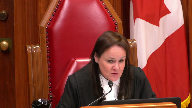
Either to make a determination itself, or remit the matter to the trial court.
So I would like to hear why the first option should not be for the Court of Appeal in such a situation to remit the matter back to the trial court.
Speaker 4 (01:56:29): The reason they should not do that, Madam Justice, is because in the case at Barr, you’re dealing with a family with nominal income, perhaps not nominal income, but nominal wealth.
Very little equity in a home.
They’re not high income earners.
They’ve now gone through a nine-day trial.
There’s been a determination that there’s an error in law, so they launch into appeal with the expense of the appeal books, all the transcripts from trial.
The expense of that is extraordinary, tens of thousands of dollars to get the appeal organized and then to draft the factum and pay counsel, and now they’re in the court of appeal, and for the court of appeal to say, we think you should go away and go to the trial court, and then they have to, particularly in these post-COVID or ongoing COVID days, to get a hearing in the trial court.
There might be a suggestion to go back to the trial judge.
Then you’re waiting for that trial judge’s calendar.
That trial judge sits all over the province of British Columbia.
There’s no idea how quickly you could get in, but just in the normal course, to book a two- or three-day hearing in British Columbia is six months away, at least.
What you’re adding on is further delay, further expense, and these families, Canadian families, can’t afford the luxury of going from court to court to court.
They have the court of appeal, and that’s where they can go, and usually that’s where they end up.
In this case, we are here before you today.
But this is a very expensive enterprise.
Justice Rowe (01:58:21): argument I would say for clear guidance from this court as to how matters of this nature should be dealt with so there is no uncertainty as to where these matters should be adjudicated.
Speaker 4 (01:58:38): Mr. Justice, I agree with you entirely.
At this point, there is no clear direction.
We know that the Court of Appeal will accept fresh evidence.
They do it all the time.
They hear fresh evidence, as do all the other Courts of Appeal across Canada.
Sometimes they reject it, sometimes they accept it, sometimes it changes the result, sometimes it does not.
But in those cases, there’s no suggestion that they ought not to have been in the Court of Appeal.
They ought to have gone back to the trial court or back to the trial judge, because that’s not the way the cases have played out over the last several decades in family law.
Justice Brown (01:59:18): Do you not accept that there is a risk, and depending on your answer, there’s gonna be a follow-up question, Ms. Lang, but do you not accept that there’s a risk that what is in form an appeal becomes in substance an application for a variation without having to show a material change in circumstances?

Speaker 4 (01:59:44): Well, what I say to that, Mr. Justice, is that if the Court of Appeal accepts that the fresh evidence complies with the Palmer Test, then there’s no need for a variation.
The Court of Appeal can then consider how that fresh evidence, or rather new evidence, affects the overall dynamics of the entire case, and they can apply that new evidence and make a determination as to whether the trial judgment is correct or the trial judgment is not correct.
So I think that’s my answer to you.
Justice Brown (02:00:27): Does that apply in every case, or are there instant, would you accept that there are instances where the Court of Appeal should refer the matter back for a variation application at the B.C. Supreme Court?

And if so, I’ll just give you the follow-up.
On what basis do we draw the distinction between where the Court of Appeal should proceed and decide the appeal on the fresh evidence, or where it should refer at least those issues back?
Speaker 4 (02:01:03): Well I think of course there needs to be ultimate flexibility and so the court appeal needs to be able to determine that it is best if the matter goes back to the trial court and then of course the litigant is faced with the material change of circumstances test and that test is complicated in that that test incorporates an element which is that if the if the change was in the knowledge or the requirement of the change was in the knowledge of the parties then the the the court will not hear uh the the variation application because there’s there’s a there’s an element of the test that looks back to see what the parties knew or ought to have known right and so that may in fact shut down a hearing of new evidence.
Justice Brown (02:02:01): But that’s in fact Parliament’s direction and so because of that should the Court of Appeal be prudent, at least take the deliberate step of considering whether it really ought to proceed given that Parliament has provided a channel by which variations are to occur.
Speaker 4 (02:02:22): Yes I think that the court of appeal should look at all the options and that is one available option and perhaps council when they’re making fresh evidence applications need to turn their mind to submissions on why this case is best dealt with as a fresh evidence application as opposed to a variation application in the trial below but since that has not been part of the protocol in family law that to my knowledge having practiced family law for 32 years I’ve never seen that analysis done in the court of appeal in a family law case.
Justice Brown (02:03:05): Well, it’s because you’ve practiced family law for 32 years I’m asking you these questions.
I understand that.
And I’ll land on this one is by what criteria if we were writing a protocol, by what criteria would you suggest that determination should be made as to whether the appeal proceed with this fresh evidence application in hand and decided or that it be sent back for the parliamentary, parliamentarily dictated process to proceed by way of a variation application.
Speaker 4 (02:03:43): I believe that the criteria have to be has to be based on practical considerations.
If this is a wealthy family where the finances are unlimited, as many of the cases that we see today, they’re actually ending up in court because they’re the only ones that can really afford to go to court, then perhaps they can be instructed to go back to the trial court.
But in these kinds of cases like the one at Barr, this family, these young people cannot afford to have now a fourth level of adjudication.
And so it really has to be, in my submission, a practical consideration.
Overlapping speakers (02:04:23): And also.
Speaker 4 (02:04:24): taking into account what the delay will do with respect to the children, that they are still in limbo, they’re still visiting their father three weekends a year, a week in the spring, a week at Christmas, and a month in the summer.
And if that is what is appropriate and proper, then fine.
But if that schedule does not meet the children’s best interests, and of course I say it does not, then it needs to be adjusted and the practical considerations need to come into play.
Justice Rowe (02:04:59): But I tell you what I see when I read the BC Court of Appeal, and I’m afraid that what I’m picking up, I mean, your submissions are consonant with the BC Court of Appeal, which makes sense from your point of view.
But I’ve also picked up from some of the interveners is that there’s a sort of a stew, there’s a sort of a bouillabaisse, there’s a sort of a casserole into which you throw, do we let in new evidence?
And if we let in new evidence, the standard of review somehow is different.
I mean, this isn’t doctrinal clarity.
This is a murky, almost incoherent approach.
I mean, the standard of review cannot be different if you let in new evidence.
The standard of review has to be maintained.
And what is implicit, it seems to me, maybe it’s the foundational problem here, the Court of Appeal is, we’re going to let in new evidence.
And as soon as we let in new evidence, no difference is to be shown.
We’re now in the business of making determinations as if we were the triers of first instance.
And what I hear from a lot of the parties or the counsel before me is a desire to enable that.
And I must say, I find that doctrinally confused and frankly problematic.
Speaker 4 (02:06:29): Well, Mr. Justice, the standard of review is correctness, and it remains correctness.
Now, in a relocation case that this court heard in the early 2000s, Van de Peer versus Edwards, the Court of Appeal in British Columbia tried to change the standard of review in a relocation case, a custody case.
And this court soundly rebuked the notion that you can change the standard of review.
And so I’m not suggesting, and I don’t think anybody here is suggesting the standard of review be changed, but what the new evidence does, it adds further material to the whole picture.
And the Court of Appeal, I say, is empowered to review the whole picture in light of the new evidence.
And they are empowered to make inferences a fact.
They’re empowered to make an order that they believe is just.
All of that is their authorization under the Court of Appeal rule and the Court of Appeal Act.
Justice Moldaver (02:07:31): I just want to take up something that my colleague, Justice Brown, raised with you, and I just want to see what your view of is this.
My colleague put the question to you by going to the Court of Appeal and seeking fresh evidence and seeking to have this evidence admitted as fresh evidence or new evidence, Palmer Test, has somehow a lesser standard than going to the original judge and showing a material change in circumstances.
Now, the premise was, in the Court of Appeal, all you have to do is show a change in circumstances, not a material one, and with respect, I have trouble with that because if you apply the Palmer Test carefully, it’s got to be more than just some change in circumstances.
It’s got to be sufficiently serious to meet both sub 2 and 4, more particularly.
So that’s not just any change in circumstances.
I’m just questioning, is there a different test really by adding the word material for a variation as opposed to the Palmer Test, which has a pretty rigid set of rules to get the evidence in?
Speaker 4 (02:08:47): I say that the Palmer test is a rigid test because the evidence has to be relevant and bear on a decisive issue, it has to be credible and reasonably capable of belief, and then it has to be taken with the other evidence expected to have affected the result at trial.
That is a stringent test.
Overlapping speakers (02:09:09): i.e. material i.e. material
Speaker 4 (02:09:11): Well, the materiality, I can tell you that the courts are reluctant to find material changes, particularly when it comes to, you know, children’s issues.
Money issues, not so much, but children’s issues.
And the evidence has to be very probative and very cogent.
But I don’t think it’s a lesser standard.
But I do want to refer to one other case.
And it’s a case again of this court.
It’s Regina versus St. Cloud.
It’s a 2015 case of this court.
And this court looked at the fourth prong of the Palmer test.
And this is what they said.
Whether new evidence could be expected to have affected the result of trial, that of course is the fourth prong.
The court said the new evidence must be such that it is reasonable to think, having regard to all the relevant circumstances, that it could have affected the balancing exercise engaged in by the justice.
And then the court said the new evidence must be significant.
And just to reiterate my previous comments, but now relying on Regina versus St. Cloud, this evidence was significant.
That is what the trial judge said.
And this court in 2015 said that if it is admitted and if it could have affected the balancing exercise, then the whole balancing exercise has to be reviewed in light of the new evidence.
And say that’s what the Court of Appeal did.
Justice Rowe (02:11:01): I think I would agree.
Speaker 4 (02:11:16): Unless there are any further questions, that completes my submissions.
Justice Wagner (02:11:20): Thank you very much.
Any reply, Mr. Busley?
Speaker 1 (02:11:31): um in the scheduling uh online we saw the replies were on the thursday uh is has that changed since
Overlapping speakers (02:11:40): I’m inviting you to make a reply right now, so you say yes or no.
Speaker 1 (02:11:45): No, we would like to keep the reply for Thursday, if that’s possible.
Justice Wagner (02:11:52): Well, that’s your decision.
So I will ask the parties to come back before the court tomorrow morning at 10.30.
For the moment, the court will take its lunch break, and we’ll be back at 2 o’clock A.T. time.
Thank you.
Speaker 1 (02:13:02): Court!
Overlapping speakers (02:13:02): La cour!
Justice Wagner (02:13:25): Thank you.
Be seated.
Ms. Karina Jackson.
Speaker 5 (02:13:34): Thank you, Mr. Chief Justice and Honourable Justices.
I wish to first address the respondent’s application to reduce fresh evidence and the issue of mootness as a threshold issue.
While acknowledging that the respondent has now relocated to Saskatoon, Saskatchewan, the appellant opposes the application to reduce fresh evidence and as it is not relevant nor decisive to the issue that I see as important on this appeal and that is whether or not the Court of Appeal of Saskatchewan exercise their jurisdiction correctly in overturning the majority of the trial decision and returning the matter to a new trial and whether they applied the correct standard of deference to the trial judge’s decision.
The appellant further submits that neither of the issues at the heart of this appeal, that is the issues of relocation and spousal support are moot in light of the new evidence.
With respect to relocation, although it seems that the respondent moving to Saskatoon renders an appeal moot on mobility, there does remain live controversies between the parties that will be addressed by this Honourable Court’s decision and that is namely costs and holiday parenting time.
Further, there’s going to likely be ongoing disputes between the parents with respect to parenting time that may as well be impacted by the decision of this Honourable Court.
Overlapping speakers (02:15:03): Sorry, you want us to decide holidays and parenting time?
Speaker 5 (02:15:06): No, Mr. Justice Brown, I’m asking you to decide whether or not the Court of Appeal was making the correct decision when they overturned the decisions of the trial judge with respect to the defendant.
Justice Brown (02:15:25): Is that even the issue or is the issue whether the Court of Appeal applied the correct standard of review in reviewing the decision of the trial judge?
Overlapping speakers (02:15:35): Yes, my lord, I would say that is whether I agree with the court of
Justice Brown (02:15:39): agree with the court appeal or not may not matter a hill of beans.
What matters is whether the appellate court can find itself to its role.
Speaker 5 (02:15:48): I agree entirely, Mr. Justice Brown, and I would say that I think that the most important issue on this appeal is the fact in my submission that the Court of Appeal did not appropriately give deference to the trial judge’s decision.
So in that regard, it had real-life impacts for the family.
And further, in terms of your comment of whether I want you to decide upon the holiday parenting time and costs, costs are very significant in this matter.
The mother was ordered costs of the trial that was overturned by the Court of Appeal, and then the Court of Appeal went on to order costs against her, and there’s been numerous applications that have been made.
So costs are significant, and that’s significant in this appeal, given that the father has remained in possession of the bulk of the family assets, has not paid the mother out in accordance with orders, and he is the higher income earner as well.
The mother, being the primary parent, is now in a situation of poverty.
So I understand what you’re saying about what the role of this court is, and it’s not to determine costs, but costs are significant.
Finally, I would say with respect to the relocation, and I think I’ve made the point of what I think is the most important thing to be decided upon here, we don’t know what the father is going to do, and if the father now moves back to Lloydminster, we don’t want kind of a decision from the Court of Appeal hanging that says he is able to take this matter back to trial, thereby dragging the family through trial again.
With respect to spousal support, the appellant here is strongly disputing the validity of the minutes that the respondent is attempting to put forward as new evidence.
Agreements were made, in her view, contingent on what the result of this application would be, and so this matter, in my respectful submission, will need to be adjudicated as to whether or not these minutes are valid.
There are different points of view, and in my submission, the minutes won’t stand up to a MIGLIN analysis.
Further, the minutes— Who decides who decides who decides who decides who decides who decides who decides who decides who decides who decides who decides who decides who decides who decides who decides who decides who decides who decides who decides who decides who decides who decides who decides who decides who decides who decides who decides who decides who decides who decides who decides who decides who decides who decides who decides who decides who decides who decides who decides who decides
Justice Rowe (02:18:02): Who decides the validity of the minutes of settlement?
Who decides it?
I’m sorry?
Who decides the validity of the minutes of settlement?
Speaker 5 (02:18:12): Thank you, Mr. Justice.
I would, in my respectful submission, a lower court than this court would have to decide on the validity of the minutes of settlement as that matter would need to be adjudicated fully in terms of evidence being heard and at a full trial.
Are you going to ask?
Justice Rowe (02:18:36): discuss to somehow stay the effect of the minutes, because ordinarily, if you come to an agreement, you’re bound by the agreement unless and until you can demonstrate that there’s a basis for invalidating the agreement.
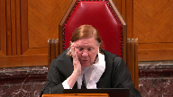
Speaker 5 (02:18:57): So as I’ve said, Mr. Justice, I believe that that matter will need to be adjudicated.
I think that the same, I think that the minutes on the face of them are a little bit ambivalent.
And as you can see from the minutes, which are at tab one of I think both of the condensed books of the appellant and the respondent, it doesn’t address the minutes, and I’m referring to paragraph nine here, does not address ongoing spousal support, only retroactive amounts.
There’s no weaver of spousal support in these minutes, and there’s no reference to the decision of this court and how that might impact it.
To be honest, it was a very unusual set of circumstances that arose, as have been outlined in my client’s affidavit, in support of contesting the submission of the minutes, and it was an unusual circumstance that we would not normally see.
However, it is what it is at this point.
Justice Côté (02:20:01): Mr. Jackson, in the minutes, it’s indicated that the parties were to be before the court yesterday, the lower court, November 30th.
Did it take place on that?
Speaker 5 (02:20:13): Yes, thank you Justice Cote.
Yes, the ongoing pre-trial conference has been adjourned.
Overlapping speakers (02:20:26): So there was.
Speaker 5 (02:20:27): no appearance yesterday.
Okay, thank you.
So again, in my submission, whatever decision arises out of this court will have practical benefits to the parties in terms of what direction things will go with the Queen’s bench.
And as well, if the respondent does intend to rely on the minutes in this hearing, it could only apply to retroactive amounts anyways.
But as I’ve said, we’re not acknowledging the validity of the minutes at all.
Now, I was asked who’s to determine the validity of the minutes and if this honourable court chose to, there is some affidavit evidence before the court as to how they came about.
And of course, that’s up to this honourable court, it would be my submission that there would need to be a trial on the validity of the minutes.
Finally, so I do think that there is a live controversy between the parties with respect to the minutes.
And I would also submit that there is the issue of ongoing spousal support, which was not addressed in the minutes.
And finally, there is a strong public interest in my submission to dealing with the Court of Appeals decision on spousal support, which in my submission is contrary to the law set down in this country almost 30 years ago in Moj.
And I would submit that it creates a backwards precedent in the province of Saskatchewan and that could be used across the country.
Justice Brown (02:21:57): Ms. Crackie, can you, I’m sorry, Ms. Jackson, can you tell me why it took so long for this court to be informed of the minutes of settlement?
It appears that they were, that they were executed even before leave was granted.
Speaker 5 (02:22:21): That’s correct, Mr. Justice.
And it was always my position and that of my client that the minutes were contingent on what happened with the application for leave.
So in my submission, my client was rushed into sitting down at a pretrial conference at the Queen’s bench level and was not approaching that settlement conference on the basis of we’ll settle this as well as my application for leave to appeal to this Honourable Court.
It was contingent upon that.
It was outstanding.
So the idea was that there would be a new trial if this court did not hear this appeal and did not overturn the Court of Appeal decision, and then there would need to be a pretrial.
And in my submission, my client should have been given due process and should have been allowed to wait to hear what the results of her application for leave to appeal to this Court was prior to embarking upon a pretrial conference.
So I don’t know if that answers your question, Justice.
Overlapping speakers (02:23:33): I have your answer, yeah.
Speaker 5 (02:23:37): Okay, thank you.
The other issue that I want to address as a preliminary issue is the clean hands doctrine.
And this is so because the the only order that was affirmed at the Court of Appeal, and that would have been on October 2020, was the division of property and the equalization payment to be made by the respondent to the appellant.
And for clarity, that order that was made by the that was originally made by the learned trial judge, that was that the respondent should pay $24,578 to the appellant as well as rolling over RSP funds of some $18,748.
So in total, this is some 43 over $43,000, which to date the respondent has never paid to the appellant.
So he has breached the order of the Court of Appeal.
And I raised this issue of clean hands partly because in recent arguments, the respondent refers to $12,000 owing to the appellant, which is incorrect.
That amount arose out of the pretrial conference, which we have just discussed.
And when the appellant went to the part in part went to the pretrial conference in order to see if she could get some of that money that was owing to her by agreement as to monies that she owed back to the respondent for spousal support after the Court of Appeal’s decision.
However, even even with that, the respondent to then again, didn’t even though agreements had been made in the minutes, which are currently disputed, the respondent did not pay her the amount that he had agreed to in those minutes in the timeline that was agreed to in the minutes.
And he has just recently made a payment of $5,000 to her and then put that in an affidavit for this on Honourable Court.
He now comes to this court seeking to adduce fresh evidence, seeking to render the appeal moot by his recent move here.
And then in my submission, imposing financial duress on the mother, which drove her to make agreements that she would characterize as interim or contingent on this Honourable Court’s decision, and he would characterize as as final agreements.
Overlapping speakers (02:25:50): Is there any dispute as to where he is residing?
Speaker 5 (02:25:53): No, Mr. Justice, there is no dispute as to where he’s residing, and there’s clearly no reason for her to contest that one piece of new evidence being provided to this court.
So in my submission, despite these issues that have come up with respect to a mootness, this appeal is an important one on a public interest scale to both ensure that the existing law out of this court is being followed consistently throughout the country and to continue developing jurisprudence that recognizes the valuable work of parents, particularly mothers, in the home and acknowledges the challenges that women face in re-entering the workforce after being a stay-at-home wife and mother.
This appeal is also an important one in my submission, as we’ve discussed, with respect to the standard of review and the appropriate deference to the trial judge’s findings of fact and ultimate decision, and the role of appellate courts with respect to relocation cases may need to be clarified in my submission.
The law as set out in Gordon v. Gertz may also need to be clarified.
And I say this because the interests of women and children are tied together.
When as here the mother is a primary caregiver and found to be the psychological parent and the children live with her, this reality is important both with respect to support and relocation issues that arise in this case.
Justice Brown (02:27:29): Your submissions kind of make, and I’m not sure this was conscious, but they make two what I think is distinct arguments.
One is that the Court of Appeal didn’t apply the standard of review appropriately.
And the second is that we need a new standard of review for mobility cases.
Is it both?
Is it one?
What’s your principal line of argument here?
Speaker 5 (02:28:01): My principal line of argument, Mr. Justice Brown, is that the court did not apply the standard appropriately, did not give an appropriate amount of deference to the trial judge’s findings of fact, nor to her decision.
But in the process of that, I think there is something else that was happening in how the Court of Appeal approached this case.
And I would say that the Court of Appeal approached the case by looking at Gordon v. Gertz and saying we have this list of things that the trial judge is supposed to look at, a list of factors that she is supposed to address in her decision.
And they kind of went down it like a checklist, and my friend also in her factum has done a similar thing.
Well, first, my argument would be that the learned trial judge did address a lot of the Gordon v. Gertz factors.
But I think it comes down to how much weight the learned trial judge then put on the reasons that the custodial parent had for wanting to move, and how the reasons of the custodial parent related to the best interests of the child.
So in my submission, the learned trial judge put weight on that, and the Court of Appeal in my submission did not even address it.
So they said that we need to go down this list of factors in Gordon v. Gertz, but then they didn’t address one of, I would say, the most important factors.
If you, on this case in particular, looking at the connection between mother and child, and as well, when I say that this Court may need to clarify that, I think there’s an inconsistency in the jurisprudence throughout this country in terms of how much weight is given that kind of happy parent, happy child factor, as we refer to it.
So I won’t go on about that, my Lord.
So with respect to that, it is not my argument to say that parents should get to move with the child for whatever reason they want to, but just that when it comes to weighing that factor, all of the factors that are, all of the life circumstances that are in place have to be looked at.
In my submission, the factors have to be examined in a holistic manner, ultimately settling on what is best for the family as a whole in the circumstances, as what is best for the parents, and particularly the custodial one and the psychological parent, will most often be what is best for the child.
The trial judge in my submission is a unique…
Justice Rowe (02:30:45): of the testimony by the President of General Motors in the 1950s, what’s good for General Motors is good for the U.S. and what’s good for the U.S. is good for General Motors.
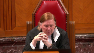
It was a very interesting way of putting it.
Are you really asking us to make a change quite as fundamental as it seems to me that you’ve put to us, which is the test is no longer the best interest of the child.
The test is the best interest of the family unit and within the family unit we are to prefer the circumstances of one of the parents or have I misunderstood you?
Speaker 5 (02:31:27): I would hesitate to say you misunderstood me, Justice Roe.
I would say that I probably didn’t put it as well as I could have.
And I don’t think that I’m asking you to change the test to the best interest of the family.
I think I’m asking for a recognition from this court, maybe on a greater level than was done in Gordon versus Gertz, as to the impact of the interests of the parents as to the interests of the child.
And so all of those factors in Gordon versus Gertz are still relevant, but it’s about weight.
There’s really been no direction ever about how one thing weighs heavier than the other and why it would.
And I would say that neither in the trial decision nor the court of appeal did that as well in terms of this particular case.
But if we look at the just kind of the bold face facts of this case, there was no connection to the city of Lloydminster.
The family had no connection to the city really, other than they up and moved from Saskatoon where their roots were to go there when the father got employment there.
Even then the father was rarely there.
He was working late, he was traveling for work.
So no roots were even being established as a family.
The children of course went to school there.
They of course enrolled in extracurricular activities, which was the only evidence that the father could put forward at trial with respect to what the connections to the community were.
And in fact, just before trial, or just before, sorry, the party’s separation, the family had been talking about moving to Calgary.
The father had been promoted and his position was then based on Calgary.
After separation, his employer allowed him to continue to work out of Lloydminster.
Justice Karakatsanis (02:33:21): Can I interrupt for a moment, please? Yes.
Because we’re very familiar with the facts.
We’ve all read the file in depth. Yes.
So I’m just trying to understand the various positions and alternatives you’re taking.
You’ve agreed that the fact that the father has now relocated should be admitted as fresh evidence.
I think I heard you say you don’t contest that.
The issue of relocation may be moot, but I think I’m hearing you say the appeal on the issue of relocation is not moot because the Court of Appeal set aside the order and ordered a retrial.
And now I hear you arguing on the merits, on the actual, no, and then the third approach was to say don’t treat it as moot because the law needs to be clarified, and now I’m hearing the argument on the merits, on the facts of the case.
And so I just want you to step back for a moment because if in fact the issue, the facts of this case, it’s moot, and the real question is whether the Court of Appeal’s decision on relocation needs to be set aside so that the trial judge’s decision is reinstated, then I’m not, I’m just not understanding the various roots and what priority, what’s an alternative to what.
Speaker 5 (02:34:53): Thank you, Justice Martin.
I understand what you’re saying.
And I’m not trying to argue the merits of the short term.
Thank you for calling me Justice Martin.
Justice Karakatsanis (02:35:01): Martin.
Justice Carrick and Sandus.
Justice Brown (02:35:06): I’m flattered, thank you.
Martin’s a lot easier to say.
Speaker 5 (02:35:12): my apologies.
It is here to say thank you.
So I’m not trying to argue the merits.
What I’m what I’m trying to get across here is that we have a case where there was very little for the court, the trial judge in my submission to focus on with respect to the child’s best interests, other than kind of what the mother’s best interests were, to some degree, there was, you know, and that’s why I’m saying while these cases have to be approached with respect to what the distinct facts are of each one.
In in this particular case, you wouldn’t see a lot of the factors that the Court of Appeal was saying were not kind of ticked off on the list.
And so it kind of did this case kind of did come down to what are the mother’s reasons for moving?
And and in my submission, when the Court of Appeal overturned the trial judge’s decision, they found that the mother’s reason for moving was all around whether or not she could work in Lloydminster as opposed to Saskatoon.
And they substituted some of their findings of fact for the learned trial judge’s findings of fact, and these are relevant on both relocation and spousal support.
And I hope I get to my main point on this.
But they substituted findings of fact with respect to her, her status as a stay at home mother at the time of separation and whether she was working.
The trial judge had found that she was a stay at home mother, wife and mother at the time of separation.
And the Court of Appeal made a different finding effect on that and found that she was employed.
Although as we know from the facts, she was in a term position of maternity leave from what she took sick leave.
And then secondly, the court found that she would be able to work in North Battlefield, a community about an hour and 20 minutes away from Lloydminster. And so it
so the Court of Appeal really focused on well, this is not one of those cases where she needed to move the mother needed to move in order to be employed.
And a I would dispute that that a that it wasn’t a case where the mother moved needed to move to be employed.
And be I would dispute the way that the court went about looking at it.
And that’s why I was trying to trying to get into some of the facts as that the family was only there because of the father’s employment.
When we’re talking about somebody’s quality of life, we’re not just talking about where they can work and where they can’t work.
There was evidence as you know, as to the mother’s strong connections with Saskatoon, and indeed the children’s strong connections with Saskatoon and family and friends and those kinds of things.
So I think what I’m trying to say here is that by just going down the Gordon versus Gertz list and not and saying, well, the trial judge didn’t didn’t consider facts.
Well, those facts were never before the court because there was no connections.
There was no way for the court to say that.
But Ms. Jackson, Ms. Jackson, where do you draw the line in terms of weight?
Justice Kasirer (02:38:30): Ms. Jackson, you acknowledge, though, in your factum, paragraph 71, that the trial judge did not refer to the evidence about North Battleford in her decision, and it’s true as well in defence of the Court of Appeal
that the evidence about, and to take Justice Roe’s comment a step further, that the child-centric view of best interest, that the record wasn’t robust, and that’s a problem for the Court of Appeal.
It is really looking for some kind of explanation from the judge as to why the best interest of the boy would be served by this, and they say in paragraph 24, with one exception, no reference as to how relocation to Saskatoon might benefit A.B. or help Ms. Krecke meet his needs.
It seems to me that the Court of Appeal wasn’t entirely wrong in noting some of the absences in the trial judge’s reasons.
Is that unfair?
Speaker 5 (02:39:52): No, that is not unfair.
There was absences in the trial judge’s decision, and I guess the argument I’m making is some of those absences were because there was no evidence for her to comment on and consider.
There was no evidence, for example, with respect to the connections the child had in the community of Lloydminster, and she was looking for some evidence with respect to what his life would be like in Saskatoon, but I don’t know that, you know, had the mother put forth, well, he’ll go to this school and he’ll be engaged in these extracurricular activities, I don’t know that that would have been determinative.
I think there was evidence before the trial judge as to how his best interest would be served with the move to Saskatoon, and it was very tied up in what would be available to the mother in Saskatoon, and so there was a focus on that, and I guess I’m arguing that that’s not necessarily wrong in this particular case, because his strongest connection, I would argue, was not necessarily to Lloydminster nor to Saskatoon.
His strongest connection was to his mother, and so the court trial judge acknowledged, and I agree it’s unfortunate that she didn’t specifically refer to the North Battleford position, but I want to argue that in the final analysis, did it matter if there was a position available in North Battleford or not, because the reality of taking a position in North Battleford for the mother would have meant that she was away from her children for 11 hours a day, three days a week, which is a lot for children that have never been in childcare to adjust to, as well as there being evidence as to both of them having somewhat special needs.
So in my submission, to find that the mother could take a position in North Battleford and thus she should not be allowed to move to Saskatoon creates the situation where the court was not looking at how is that going to serve the child.
How is it going to serve the child if the mother is getting up at the break of dawn, taking him into childcare first thing in the morning when he’s still tired, childcare he doesn’t know as opposed to his grandparents and then driving an hour and a half away from him to return after an 11 to 12 hour day for him to then start parenting him again.
And in my submission, knowing this particular appellant as I do, she would not likely have done that because she always prioritized her children above everything.
And that end result was that she has been, she has been since the Court of Appeals decision raising her family in poverty.
So that’s the kind of analysis in my submission that the Learned Child Judge made.
And it’s not one that we can say, well, here’s Gordon and Bert’s, you know, tick off each consideration.
She approached it more holistically as to what is the impact going to be on this child if they continue living in Lloydminster?
What is going to be the impact if they move to Saskatoon?
And then in looking, I think in looking at the Court of Appeal decision, it’s important that they didn’t consider the Gordon versus Gertz principle that great weight should be placed on the mother’s reasons for moving.
They really just made their decision based on the fact that they found that she could be working in Lloydminster slash North Battleford.
They never gave any weight to any of her other reasons for wanting to move.
And they certainly didn’t give great weight to that.
And there was no recognition that if the mother was going to be struggling in her everyday life with finding employment, with getting to employment, with not having support, with being unhappy, not having friendships, et cetera, around her, there was no recognition that this would have an impact then on the child.
So I want to turn to talk a little bit about spousal support.
I think that a lot of the evidence with respect to relocation and spousal support became kind of the same.
And the Court of Appeal then overturning the findings of fact of the Learned Trial Judge on support, I would argue was an error in fact, that they made some errors on the facts.
And I would submit that further they made an error in law in terms of not applying the principles that we see set out in Moj that are 30 years old.
And at the same time, not really referring to any case law with respect to spousal support other than that of Laskin.
And finally, in not going through at all the factors set out by the Divorce Act.
And I won’t go through the facts too much other than the Learned Trial Judge had imputed an income to the appellant.
She hadn’t just said, no, you’re not working and you don’t have to work and we’ll give spousal support.
She had imputed a fairly reasonable income to the appellant.
And it was based on Viva Voce evidence from Dr. Ciocla who had testified as to what employment would be awaiting her in Saskatoon.
And then she ordered a review.
She went, sorry, first when she ordered, she set spousal support in the amount in accordance with the Spousal Support Guidelines.
She referred to the case, the factors set out in the Divorce Act.
She referred to the case law of Braclo and Braclo and went through the appropriate analysis.
And I would say that in my submission, our comments about kind of the brevity of her reasons around relocation were not so in spousal support.
However, the facts supported her decision and that’s where the Court of Appeal overturned it.
The Court of Appeal found that she could have been, that the appellant could have been earning $80,000 per year and they reduced spousal support to $94 a month until December 2020 and thereby creating the debt that I referred to earlier.
So at that point in time, the mother had essentially had one year of spousal support post-separation.
And this is with a finding of the trial judge that she had been a stay-at-home mother and wife for 10 years.
She was then granted effectively one year of spousal support from the Court of Appeal, although she had the $94 per month ongoing until December 2020.
The facts, as you know, that I would argue that were incorrect at the Court of Appeal level were that she was gainfully employed at the time of separation and seemingly voluntarily gave up that employment and that she would have had further employment available to her.
The court didn’t even mention the pandemic in their decision, although their decision was rendered in October 2020 and they found that she should be self-sufficient by December 2020 at a time when dental offices were not even operating at full capacity.
As well, the mother had given evidence in her affidavit to this Honourable Court that she had been at home taking care of the children through lockdowns and etc.
So how the court should find that she would be able to work through this period of time was never addressed.
And again, as I said, in rendering their decision, the Court of Appeal made no reference to any spousal support law, save for Laskin.
And in fact, the Court of Appeal, as you know,
Justice Kasirer (02:48:10): In fairness, again, sorry, my project is not to defend anybody here, but paragraph 43, the trial judge found that Ms. Kreke had suffered economic disadvantages by the marriage and its breakdown and had a compensatory claim and a depth of need that grounded non-compensatory claim.
So by that reference of paragraph, which then I’m going on to say, we find no principled reason or evidentiary basis to overturn these findings.
So you may disagree that it was misapplied, the law was misapplied, but there’s, at the very least, an indirect reference to Moshe in the compensatory claim.
I don’t think it’s quite fair to say that they said nothing about it, in fact they noted with approval that the principles were rightly considered by the judge below, or at least rightly cited.
Now, you disagree on how they were applied, that’s fair game, but just I think it’s in fairness to the Court of Appeal.
Speaker 5 (02:49:16): Thank you, Mr. Justice.
I think they did uphold the finding that there was a strong compensatory and non-compensatory claim on the part of the appellant.
But in my reading of the decision, they didn’t address how they were addressing the compensatory claim that the mother had had with an award of $94 per month until December of 2020, which was an additional year and a half to the interim spousal support that she had had.
And in fact, in that regard, the decision didn’t even make sense on some level because at the interim level, she was awarded spousal support.
And at that time, there was no argument from the respondent that she wasn’t working and that she was on EI.
Sorry, there was no argument from the respondent that she was gainfully employed as the Court of Appeal later found.
So the respondent had never argued that she was gainfully employed at the time of separation.
The respondent had never argued that that was not a term position.
And in fact, the quantum of interim spousal support had been agreed to based on the fact that she was then on EI on a medical or stress leave.
So the Court of Appeal just went back to the trial decision and overturned the trial decision on support.
And certainly, they may have referred to Moj when referring to upholding the trial judge’s decision, but they didn’t refer to any case law with respect to why they were overturning the trial judge’s decision on everything else other than compensatory elements, other than entitlement, I guess I should say.
They didn’t discuss any of the objectives really of the Divorce Act.
They did say that she had economic disadvantage arising from the marriage, but then they went on to say that she was self-sufficient.
And in that respect, I would argue that they were incorrect in the facts and that she wasn’t employed and self-sufficient, and further that they erred in law when they didn’t consider certain principles set down in Moj.
And I would refer to one that is, I think I have Moj at tab nine of my condensed book, where the quote from Moj is, all four of the objectives defined in the act must be taken into account when spousal support is claimed or an order for spousal support is sought to be varied.
No single objective is paramount.
The fact that one of the objectives such as economic self-sufficiency has been obtained does not necessarily dispose of the matter.
However, I would say the Court of Appeal hypothesized that the appellant would be self-sufficient by December 2020 with really no evidence to support such a speculative finding.
And that was the end of it.
There was no discussion with respect to the difficulties that she would encounter getting to a level where she was self-sufficient with continuing to be the primary caregiver of the children and having very dated credentials, having been out of the workforce for 10 years.
Justice Rowe (02:52:41): It is of course for you to frame your arguments as you see fit, but it seems to me that your arguments are being framed as if the court of appeal was almost a court of first instance and we’re being asked to set aside their decision because they made unwarranted findings of fact, et cetera, et cetera.
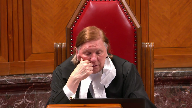
All of this may or may not be accurate, but is not the more fundamental question is what was the court of appeal up to in making its own findings of fact and saying that well, we’re gonna look at the tests and we’re gonna substitute our own view for that of the trial judge because that’s our role in their view, which is of course really the question.
Speaker 5 (02:53:32): Thank you, Mr. Justice.
And I think that’s what I’ve been trying to say is that they overstepped the standard of review in terms of the deference that should be given to the trial judge on with respect to findings of fact and with respect to her ultimate decision.
And in fact, in spousal support, they agreed with things other than her findings of fact.
So in my submission, they didn’t even and I guess that’s why I’m belaboring that they didn’t refer to any case law because they’re once having found that they agreed with the learned trial judge with respect to the compensatory non compensatory basis and the entitlement.
The only way they really could overturn the decision was to find that she was self sufficient, which they did.
And I would say that in fact, and in law, they were incorrect in that.
And as as you’ve noted, they were incorrect in terms of how they applied the standard of review.
And they gave no deference to the learned trial judge sitting through a five day trial and making findings of fact on that basis.
In fact, one of the findings of fact that the that the learned trial judge made when she computed $45,000 worth of income to the appellant, she said there was no evidentiary basis to impute anything further.
And in fact, in my submission, she was correct.
There was no evidence that she had ever made that even that much money, let alone the $80,000 that was imputed to her by the Court of Appeal.
She did not specifically address the position in North Battleford.
But in in my submission, she addressed it by saying that the mother would need the support of her family and returning to the workforce.
And that, to me was the primary finding that she made both on the relocation and the spousal support decisions.
I don’t want to cut off any of that, but I do
Overlapping speakers (02:55:40): I’ll cut you off.
Speaker 5 (02:55:40): I guess I would submit that, again, although the trial judge did not go into it in length in her decision, she was acknowledging the principles that have been set down by Moj, whereas the Court of Appeal was not, and that is there was no recognition by the Court of Appeal of how the mother’s role in the marriage and her continued role as a primary parent to the children might impact her job opportunities and how the breakdown of the marriage might put her and the children at economic disadvantage.
So in that regard, the Court of Appeal in my submission also erred in law.
Justice Karakatsanis (02:56:21): Can I ask you, and you don’t have to answer now if you’re over here, Justice Kerikatsanis.
You don’t have to answer this question now if you have more to say on the merits, but assume for a moment, if we agree with you, that the Court of Appeal ought not to have interfered with the trial judge’s decision.
What would the appropriate remedy be?
In your factum, you ask that the trial judge’s order be reinstated, and you’ve said here today that the issue of the minutes needs to be adjudicated, and that kind of could move on a separate track.
But I’m also looking at paragraph four of the order of the trial judge’s order on support, the one at, I think it’s page 30 of volume one of the record, September 15, 2019, and in that paragraph, clearly time has overtaken it.
There was to be a review in January 2021.
While the review was underway, the petitioner was to continue to receive support, and so on.
That paragraph doesn’t make sense.
It’s been kind of overtaken by time, so what would your submission be with respect to how the remedy would impact, it would impact the appropriate remedy?
Speaker 5 (02:57:51): Yes, that’s a difficult question, Justice Caracassanis, because not only has the time for the review now passed, but now there is the issue of the minutes and the validity of the minutes being contested.

So my position with respect to spousal support is that the decision of the Court of Appeal would be overturned and go back to the trial judge’s decision.
With respect to the review, my submission would be that the review, I think that what she had said in her decision, I’m not looking specifically at the paragraph, was that the review could be at either party’s request and that in the meanwhile support would continue to be paid.
So my submission would be that support should have continued to be paid until a review is requested and I have no doubt that the respondent would probably request that review unless this Court is prepared to make a decision with respect to that.
Justice Karakatsanis (02:59:06): What about the alternative of asking, referring back that paragraph four to the trial judge?
Speaker 5 (02:59:17): Sorry, referring back.
Justice Karakatsanis (02:59:19): that specific part of the order dealing with the review and ongoing spousal support.
So a set that.
Overlapping speakers (02:59:27): Essentially, the issue.
Sorry, referring that back to the court. Yes.
Because it’s the issue of.
Justice Karakatsanis (02:59:33): ongoing spousal support and review that is a bit problematic in terms of…
Speaker 5 (02:59:40): Yes, Madam Justice, that could also be a solution to the issue of the time already having been passed.
I think that my client’s position would be that she should have been allowed the review that in the intervening, that the reason for that the learned trial judge gave an order for a review was because of the uncertainty at the time as to what was going to happen with her employment, having been out of the workforce for 10 years and there was some evidence that it would increase, but it was very speculative at that point in time.
And then indeed the circumstances that came about with the pandemic and everything to me are relevant and that all of that should be considered on a review.
Justice Brown (03:00:32): I just have a question.
Is there anything on the face of the agreement that Ms. Crackie relies on to say that it was conditional upon how things panned out here?
Speaker 5 (03:00:46): No, there’s nothing on the face of the agreement that says that, Mr. Justice, and what happened with that was that my client attended the pretrial conference on her own, and she didn’t have the funds for all of the litigation that was going on, and you’ve already heard my submissions with respect to the pretrial conference being premature, and when she attended it on her own, she was there without counsel, and when the minutes were signed, she had no legal advice.
So when she came out of pretrial conference, to be honest, I didn’t see the minutes until after we had received word from this honourable court that we had leave to appeal, and at that point I asked to see the minutes, and when I looked at the minutes, I said, oh, this should say it’s subject to the Supreme Court of Canada decision because that was how I always understood it to be going forward, and unfortunately I came to that understanding in a teleconference with our chief justice, which was not recorded.
So then she immediately contacted counsel opposite and asked for an amendment to the minutes, and counsel opposite refused that amendment and takes the position that the minutes were always meant to be an agreement regardless of what happened at this court, and I guess I would make the argument that if the minutes were meant to stand regardless of what happened at this honourable court, then the minutes should have said that as well.
So they’re silent as to the Supreme Court of Canada action altogether.
Justice Kasirer (03:02:26): But on, on spousal support, on, in the minutes, you, you mentioned earlier, clause nine referring to to arrears, but for amounts going forward, the minutes are silent, is that, is that not correct?
In, in which case we’re, if we, whatever happens to the minutes, if, if one was to reverse the court of appeal, restore the trial judgment, we would go back to those terms, is that, is that your position?
Speaker 5 (03:03:00): Yes, that there is nothing in the minutes waving spousal support and that my client should be entitled to ongoing spousal support and if this court makes that decision.
Justice Kasirer (03:03:12): Okay, and then on the review that payment would continue until the review was undertaken.
Speaker 5 (03:03:19): Yes, I think, unless there’s any other questions, I’m just going to make a couple submissions and conclusion.
I’m going to try to tie it together.
I feel like it was a bit scattered, but I think that what my main submission is on the relocation issue is that the Court of Appeal overturned the decision primarily on finding that it was not an exceptional case in which the mother needed to move for employment.
Secondarily, they held that the Gordon and Gertz factors with regard to the benefits or detriments to the children of the move had not been appropriately canvassed.
I disagree, of course, with both of those points.
And further, the Court of Appeal did not consider the mother’s views and her reasons, including the reality of her and the children’s lives, should she work one and a half hours away as they seem to find and have to be away from her child care rearing responsibilities for 11 hours per day.
They did not consider how this might tie into the best interests of this child.
Further, I would say that families in Canada depend upon the law to ensure that they are treated fairly in our courts.
And I would submit that the Court of Appeal here stepped outside of the scope of the standard of review when they first of all made different findings of fact than the judge and then went on to make rulings that in my submission do not follow or even consider the jurisprudence of this honourable court, such as Moj.
And in that respect, there should be accountability in ensuring that the law is applied consistently.
And only with accountability can we ensure that the objectives and the policy considerations that are important background to Canadian family law will be achieved.
And only with this accountability in my submission, the overturning of the entire Court of Appeals decision, can we ensure that the law of this country continues to develop in every province to recognize the challenges women face post separation and to ensure we proceed towards achieving substantive equality.
If this Court of Appeal decision stands, in my submission, a new precedent will be set for the efforts that a primary caregiver parent post separation has to go to in terms of becoming self-sufficient.
That standard that was set by the Court of Appeal in my submission is unrealistic for most single parents in Canada.
The efforts that the Court of Appeal was suggesting the appellant should meet would put her in a position of having to choose whether to be present for her children and focus on parenting, perhaps in poverty, or to be absent and unable to attend the wide array of needs that children need.
And further, it places all responsibility on one parent over the other to both financially support and take care of the child, while the other one simply has to pay the court-ordered support.
And this is contrary to the objectives of the legislation, particularly with the recent changes, and to the principles set down by this Court.
And unless there’s questions, those are my submissions.
Justice Wagner (03:06:50): After a break, I’m sorry, 10 minutes.
Justice Martin (03:07:34): De court la cour!
Justice Wagner (03:07:56): Thank you.
Please be seated.
Speaker 6 (03:08:02): Good afternoon, Chief Justice, Justices.
Kate Crisp on behalf of the respondent, Amro Al-Ansari.
This appeal raises issues regarding the following, mootness, mobility, and spousal support.
I would like to turn first the threshold issue of mootness.
I have attached to tabs two and, or tabs three and four of our condensed book, these court decisions in Borowski in Canada and Smith and the Queen, which outlines the issues and how to address mootness in appeal cases.
It is a two-part analysis.
First step is to determine, is there a live controversy between the parties?
Secondly, if there is no longer a live controversy, should this court nevertheless exercise its discretion to hear the appeal on the merits?
Justice Brown (03:08:44): Mr. Ansari moved back to Saskatoon in April of last year.
Wouldn’t that have been an important detail to include in your response to the leave application?
Speaker 6 (03:08:55): I believe the timing of the response to lead application occurred before he actually relocated back to Saskatoon.
It was a very similar time.
Justice Brown (03:09:06): Even to tell the court before it disposes of the matter and leave?
It’s not really an itty-bitty detail.
It’s the heart of the appeal, is it not?
Because you’re about to tell me it’s the heart of the appeal when everything’s moot.
And then we find out about it, what, a couple of weeks ago.
Speaker 6 (03:09:25): Correct Justice Brown, we, it was not brought to the attention of the court at that time.
We were responding to this court’s, the app, the appellant’s leave application and at that point we wasn’t sure what would happen as a result of his relocation back to Saskatoon.
The subsequent pre-trial that was scheduled or at this court where we’re not grant leave.
Subsequent to that we did file it with our materials in order to provide an update to the court on the change in circumstance.
We are not the appellant in this matter.
The appellant did not raise any of these changes in circumstances to the court and so we felt incumbent upon us to to raise those and adduce those and ask that to be included in our fresh evidence application.
Justice Karakatsanis (03:10:08): One of the things that Ms. Jackson said was, I think someone said, that the the respondent would be free to take a job somewhere else and re-litigate the matter perhaps, so can you answer that?
Speaker 6 (03:10:25): Well, I don’t know that that would be different in any other circumstance.
That would be a change in circumstances that then a party would have to apply to.
Justice Karakatsanis (03:10:34): Except this, if the trial judge’s reasons and order stands, then it has been adjudicated, and you’d need a change of circumstance from that.
In this case, because the Court of Appeal has set aside that order in order to retrial, there would be no base decision from which to say change of circumstance.
It would just be a fresh look at it.
Speaker 6 (03:11:02): Correct, I understand your point Justice Caracastanis, that it would be a fresh look at it.

I would, as opposed to a material change in circumstances, that he is no longer living in Lloydminster and he’s now living somewhere else.
But I think regardless of whether the original trial decision stands or the court of appeal decision stands, he would have to make that application to the court to say he is no longer living in Saskatoon or Lloydminster and what should the parenting arrangements then flow from that decision or that relocation would you be prepared
Justice Kasirer (03:11:34): Would you be prepared to vacate the conclusion of the Court of Appeal on that point?
Overlapping speakers (03:11:42): prepared to vacate the court appeal decision to set a new trial?
Justice Kasirer (03:11:44): you that you’ll, that you won’t, that you vacate the order of a nuke trial.
You don’t, whatever happens on the appeal, that you vacate that conclusion and that you content yourself with, with the trial judge order on relocation.
If it doesn’t matter, if you’re saying it doesn’t matter.
Speaker 6 (03:12:01): I was just saying, in the circumstances that he relocates away from Saskatoon as to whether that would then result in having this re-litigated again, I would just say that would not matter.
I think with respect to this circumstance, he has relocated to Saskatoon.
It is our position that the appeal should be dismissed as there is no longer a live controversy between the parties because he has relocated to Saskatoon and they have entered into new agreement with respect to how they will parent their children going forward.
Justice Karakatsanis (03:12:29): But what do we do with the Court of Appeals decision that set that order aside and has ordered a retrial?
If it’s moot and if he’s content to be in Saskatoon, why wouldn’t you agree to reinstating the order with respect to the relocation?
Maybe I shouldn’t ask you why wouldn’t you.
Maybe I’ll just ask the same question Justice Kasir asked.
Would you be content to reinstate with the Court of the Trial Judge’s order the order’s judgment on relocation?
Speaker 6 (03:13:05): Um, I know, um, only in the fact that I think in either way we are down a process now of having gone back to pre-trial and agreeing to continue to go down to pre-trial with respect to trying to resolve what the parenting arrangement should be with respect to this child at present and going forward.
And if we cannot reach an agreement in the pre-trial process then the next step in that process is trial, um, which is provided for in the Court of Appeal’s decision.
Um, now I understand the point that if it’s moot and we dismiss the appeal, um, or, you know, going back to the trial decision if he’s going to stay in Saskatoon.
Um, but I would submit the end results of the two processes are the same.
If the Court of Appeal decision stands and the ability to return it to trial, um, maintains its position, it would be the same as if he’d relocated to Saskatoon from the, from Lloydminster, brought an application to vary, and started the process afresh and anew.
We’ve just kind of skipped that initial stage and we’re now in pre-trial, um, and then if we can’t reach an agreement the consequent step would be trial.
Justice Martin (03:14:17): But can I go back to this particular point, which is that the legal issue that was the subject of a five-day trial, one of them was whether or not the mother had the legal right, shall we say, to relocate to Saskatoon.
Pardon me, but I don’t see how the father moving to Saskatoon makes that legal issue moot.
It may render it of less practical significance, but it doesn’t render it moot because she’s still entitled to a determination as to her legal ability to live in Saskatoon.
Speaker 6 (03:14:57): Yeah I guess and that would be the second part I would say of the Borowski test as to whether this court should nevertheless entertain the appeal as there is no live controversy between the parties as to where they should be located or residing or parenting their children.
Justice Brown (03:15:12): Well, we don’t know that.
We just know that he’s in Saskatoon.
Justice Martin (03:15:17): and we know he can move from Saskatoon, he could take the job that was offered in Calgary and so why does his location make her legal determination move?
Speaker 6 (03:15:43): I mean, I guess in that sense, it doesn’t.
I was thinking more of the controversy between them as to whether they need to, the relocation issue with respect to her moving to Saskatoon now that he has now moved to Saskatoon, the issue as to where they both should reside or how they will be parenting in the same city is not the same one that was at trial, not the same one that was decided by the Court of Appeal.
So that issue as between them is moot, but I guess the legal determination that you’re referring to with respect to the appellant’s legal rights to relocate from William and Sir to Saskatoon is still open for this Court to determine.
Justice Rowe (03:16:29): I mean, just as a matter of precision, I don’t want to be fastidious.
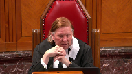
Courts don’t tell adult people where they can live.
Courts do say whether they can take their children with them. Yes.
And the trial judge said that the mother could, if the mother moved from place A to place B, she could take the child with her.
And the custody would continue to be, she’d maintain custody.
So that would be undercut unless the trial judge’s decision was restored. Right?
Speaker 6 (03:17:19): Would it not hurt her decision to be able to relocate with the trial from more Mr. Saskatoon would be undercut if the trial decision was left overturned by the Court of Appeal?
Yes, I agree.
And I think that the Court of Appeal was correcting this decision to to say that she wasn’t appropriate.
And it wasn’t well reasoned for the appellant to be able to move from from one Mr. Saskatoon at the time she did.
But having done so and the passage of time it has elapsed since then, the respond has made the choice himself to move alongside her so as to render that issue no longer active between the two of them.
Justice Kasirer (03:18:04): It really does sound like you’re arguing that it’s not moot.
I mean, I hate to say it, but it sounds like you’re saying that it’s a, it’s a live issue as, as to, as to whether the, the trial judge’s order should stand or not.
Speaker 6 (03:18:24): Yes, I guess I was thinking, and that’s maybe the different point between how I was approaching this is that the issues between the parties as to where they should be living and raising their children is now moved as they’ve chosen a city together.
But as to whether the trial judge made the correct or incorrect decision in this matter, it continued to be a live issue before this court. Correct.
With respect to the Court of Appeals decision on that matter, on the issue of mobility, decisions with respect to where a parent can relocate the children away from the other parent requires careful analysis of the relevant factors, which at the time of trial were outlined in Gordon and Gertz.
And in her oral judgment at tab five of our condensed book, the trial judge provides exceptionally brief reasons as to why she permits the appellant to relocate to Saskatoon with the children.
These lack of reasons is commented on by the Saskatchewan Court of Appeal at tab six of our condensed book.
At paragraph 24 they state, the trial judge decision contains very little in the way of analysis of the Gordon and Gertz factors or of AB’s best interest.
There is little with one exception, no reference to how the relocation to Saskatoon might benefit AB or help Ms. Kraykay meet his needs.
The appellant acknowledges at paragraph 36 of her factum that the trial judge’s decision on relocation were quite abbreviated, but that the failure to outline all of the evidence in support of her decision was not a material error.
The respondent does acknowledge that omissions and reasons is not a material error in and of itself pursuant to this court’s decision.
However, reasons are important.
Justice Brown (03:20:08): I wonder if the Court of Appeal did a little abbreviating itself when it said that there was virtually no consideration of how the relocation would be beneficial other than spending time with his grandparents.
The trial judge did express concern about the father’s style of discipline, actually went on about that at some length, granted the schools, the homes were awash as between them.
But nonetheless, there was that consideration and all this before the reference to the grandparents who the trial judge added.
It wasn’t just that the child would have a relationship with the grandparents, but the grandparents would help her.
And it might be a better arrangement than say requiring her to drive highway 16 hours a day so that she could work in North Battleford.
Speaker 6 (03:21:06): Well, in response to those points, the trial judge did comment on the respondent’s parenting style as she did with respect to the appellant’s style, comparing them, one being she found maybe too rigid and one she found maybe being too soft, outlining her thoughts as to what the appropriate parenting arrangements would be going forward.

But I will point out that there are many findings or evidence before the course that she did not consider in a determination under a full analysis of the Gordon and Gertz factors, which weigh against and not in favour of a decision.
And she turns to the mobility and provides a two-paragraph conclusionary statement that it would be in the child’s best interests without providing a basis as to how she would submit, reach that decision, and doesn’t give much solace to the respondent that the arguments he made with respect to those issues were fully considered by her and gave the court of appeal a reasoned belief that she had not fully considered the factors of Gordon and Gertz or the evidence before her and therefore gave them the option to review the evidence proffered at trial to see if that decision could be supported.
Justice Martin (03:22:20): But isn’t an alternative view of the trial judgment that we start with the premise that the trial judge knows the law.
The trial judgment refers expressly to Gordon and Gertz.
Gordon and Gertz has a multifactorial test and maybe the trial judge here is just addressing those factors which are seen to be most relevant given the evidence before her.
Speaker 6 (03:22:46): I would agree with that proposition if I think if she had referenced some of the factors I think would be most relevant.
Some of the factors she didn’t reference were with respect to the child’s connection to the community, how he was doing in school, his friends, his activities, and most importantly his relationship with his father who he was spending you know five out of 14 days
but you know almost a shared parenting arrangement at the time of child.
She also did talk about how the appellant’s reasons for relocation could be supported or maintained in light of the evidence before her regarding her employment at the time of separation, regarding the availability for employment in the same vicinity as Lloyd Minster and to Justice Brown’s point I think a question ago about the driving distance to North Balfour on highway 16 the relocation to Saskatoon was not going to limit any driving distance for the appellant.
She was proposing that the child
Justice Brown (03:23:47): Children won’t be in daycare if she’s traveling from Saskatoon.
That seems to me to be a massive distinction between the two.
Speaker 6 (03:23:59): Correct.
They wouldn’t be having to be in daycare for two to three days that she was working part time if she was in Saskatoon.
That was her evidence at trial, although interestingly enough, her evidence that she filed in support of her application for leave details that her parents were not as able to assist with caring for the children as she had anticipated they would be and required her to to be at home or not take positions outside of the home.
So I don’t know how viable those plans were at the time of trial with respect to child care arrangements.
And it’s a reasonable availability of child care.
That should be a consideration when you’re talking about removing a child away from his father, taking him from five out of 14 days to maybe three to five days a month because the kid wouldn’t have to be in daycare for a few hours a day.
I don’t know that she fully, the child is fully balanced.
Overlapping speakers (03:24:52): By a few, I think you meant 11?
Speaker 6 (03:24:55): Well, I mean, it’s presuming that the child is in school for the balance of, you know, from 9 a.m. to 3.30 p.m.

So the time he would be in daycare would be the before and after school portions of the day is what I was referring to, Justice Brown.
So with respect to the reasons of the trial judge, we do contend that reasons are important in understanding the decision that is reached at trial.
As this court outlined in Vavilov, tab 8 of our condensed book at paragraph 79, reasons explain how and why a decision was made.
They help to show affected parties that their arguments have been considered and demonstrate that decision was made in a fair and lawful manner.
This shield against arbitrariness, as well as the perception of arbitrariness and the exercise of public power.
As outlined by this court in Van de Peer and Edwards, where the omissions give rise to a reasoned belief that the trial judge forgot, ignored, or misconceived the evidence in a way which impacted their decision, a court of appeal may review the evidence presented at trial to ascertain if the trial judge’s decisions can be supported.
This is further supported by this court’s decision in Gordon and Gertz at paragraph 52, where it’s reviewing the trial decisions found that no reference was made to circumstances prevailing after trial, the current needs and desires of the child or the respective abilities of each parent to meet them.
One may speculate that the trial judge having heard full argument had such factors in his mind when he made his decision in favor of the mother, but one may equally infer that the necessary fresh inquiry was not fully undertaken.
In either event, it seems clear the trial judge failed to give sufficient weight to all relevant considerations and is therefore appropriate for this court to review that decision and should find the conclusion unsupported on the evidence, vary the order accordingly.
It’s our position that that is what the court of appeal did here.
Having found the reasons of the trial judge lacking with respect to the basis for allowing the relocation from Lord Minster to Saskatoon, they took a look at the evidence that was proffered at trial and found that there were a number of instances where findings of fact were made or evidence that was not properly weighed before the court weighed against a relocation instead of in favor of it.
That included that the appellant had not provided any evidence as to where the children would be attending school if they were in Saskatoon, that the appellant had not provided any evidence of the extracurricular activities the children would be in Saskatoon, no evidence of other social or family ties to Saskatoon other than her parents.
No discussion as to how the impact of moving the child from Lloyd Minster to Saskatoon, including removing him from his school, his activities, his friends, and most importantly, his relationship with his father, again, he was spending a significant period of time with at the time of trial, reducing his parenting time from five out of 14 days to three to five days a month.
Finally, there was no reality testing of the basis for relocation regarding the
Overlapping speakers (03:28:03): N-
Speaker 6 (03:28:03): necessity of the move for the appellant’s employment.
There was a serious misapprehension of the trial judge with respect to the evidence on the appellant’s employment at the time of trial and at the time of separation.
At the time of separation, the appellant was employed, earning just under $8,000 a month, which annualized about $95,000 a year.
That position was termed, but it was not at an end on May 30, 2018, when she left it voluntarily.
In addition, there was evidence of ample other opportunities within the same driving distance the appellant was proposing to commute to if her relocation was permitted.
That’s outlined in the testimony of Dr. Rabin, which is at tab 14 of our condensed book.
Having regard for all of these factors, the Saskatchewan Court of Appeal correctly concluded that the trial judge’s decision on relocation could not be supported by the evidence and therefore set it aside.
Instead of reversing the decision, having no knowledge of the current interests of the child or the circumstances of the parties felt that the only option they had available to it was to send it back to trial for a full determination of the issues as they were then.
It has now been 2 and 1.5 years since the trial was terminated.
This is your first time at a trial, so you’re not used to it.
Justice Kasirer (03:29:17): you’re describing the facts, she had, it was, the job she had was replacing someone for a maternity leave, right? Correct.
So she didn’t have full time or at least a permanent position.
Overlapping speakers (03:29:31): and you say.
Justice Kasirer (03:29:32): You say she left voluntarily, wasn’t it, you’ll correct me if I’m wrong, wasn’t she ill?
Speaker 6 (03:29:40): She, she, that is her position, although I would note that there was no medical evidence submitted a trial to substantiate that position.
She conveniently left that position two days before trial, or before separation one day before she went to the PlayStation to have the respondent charged with assault in this matter and took the children and went to Saskatoon.
So, we do not agree that this was not a voluntarily a voluntary decision to leave that employment.
The employment was not at an end, it was a term position, but it was still available to her up until sometime in the fall of 2018.
Who knows what would have happened if she had stayed in that employment.
We, we do not know because she did not choose to do so.
She also did not choose to apply for the employment that was available in North Balfour from the two different dentists at that time. We don’t.
If she had done so, we would have known if she had been refused for that employment, or maybe the reality of what it would have been like for her to drive back and forth from Lloydminster to North Balfour would have been evidence of the trial judge at that time.
Justice Brown (03:30:48): Perhaps the trial judge felt that he or she could have taken judicial notice of what it’s like to drive in the winter, in the dark, on Highway 16.
Speaker 6 (03:31:01): correct Justice Brown but again the proposed employment opportunities that the appellant needed to move to Saskatoon forward also involved driving the similar distance out of town morning and night so they were no

Justice Brown (03:31:20): up there maybe there were jobs in Edmonton.
Speaker 6 (03:31:25): We’re not talking about, you know, having her drive fast, it was, you know, looking at similar opportunities within a similar distance that she was proposing herself to do upon her relocation and not even on a relocation she was pros.
She started the employment in Davidson, while living in Lloydminster, which was even a more significant driving distance for her.
So, I don’t think that the reality testing of her employment opportunities at trial was fully conducted by the trial judge, or she did not, you know, provide reasons for that in in her decision.
Justice Kasirer (03:32:05): She said, among other things, she was discussing it in the context of the guidelines and support, but she said that after a person has been a primary caregiver and a homemaker throughout a 10-year marriage, it is not expected that they will commence work within a very short period of time after separation.
You’re telling us things about what, on the facts, you don’t accept the medical evidence.
What are we to do with that?
These are reversible errors that you feel that were made at trial.
Speaker 6 (03:32:46): Well there was no medical evidence and the trial judge from my recollection did not refer to the medical evidence.
She refers to the position that the appellant had at the time of separation as a term position of five months which was a material error because that was not the term position that she held at the time of separation.
It extended into the fall of 2018.
She was not having to locate work following separation.
She had work at the time of separation.
She just had to maintain that employment and her financial situation would have been vastly different at that time.
Yes that was a term position that came to an end
but there were employment opportunities within a similar driving distance to Lloyd Minster that wouldn’t have required her to relocate to Saskatoon which would have maintained the relationship between the father and his son.
So there were, as pointed out, there was a benefit for the appellant to move to Saskatoon which was the assistance of her parents in childcare obligations but the consequent disruption to the child, I’d say as the court of appeal outlined, was not balanced against that and not necessary based on the employment opportunities that were available to the appellant in Lloyd Minster.
It has now been two and a half years since the trial decision was rendered.
Both parties now live in Saskatoon and parent their son on an agreed-upon schedule that they’ve reached a pretrial.
They have further agreed to review that parenting schedule by way of a return to pretrial at a later date.
The circumstances now play in the party’s lives bear little resemblance to the circumstances of trial.
If any changes are required with respect to parenting going forward, those decisions should occur at the court of Queen’s bench level based on the current circumstances of all parties involved.
Justice Brown (03:34:34): I guess the difficulty is they don’t bear any resemblance to the circumstances of the time the Court of Appeal made its order.
Speaker 6 (03:34:43): Correct, they do not.
With respect to the issue of spousal support, I do want to return to my friend’s comments with respect to the process for pre-trial at how we ended up there and her understanding and dispute with respect to the validity of the minutes.
We ended up at pre-trial after a conference call with the Chief Justice of the Court of Queen’s Mansions for Saskatchewan to set trial dates in this matter.
That was asked for in order to move the process forward whether this court granted leave or not.
Both parties agreed following that conference call that they would re-attend at pre-trial and attempt to try to address outstanding matters before them without the need for further litigation.
No declarations of defiance setting this matter back down to pre-trial which were attached to tab two of our condensed book contain a declaration that it was subject to any decision of this court.
The minutes themselves at tab one of our condensed book are plainly worded and also contain no declaration that they were subject to a determination of this court.
The appellant requested clarification on this point multiple times from the Chief Justice following this court granting leave in June of 2021 to amend the minutes to include such a deculation.
The Chief Justice of the Court of Queen’s Mansions for Saskatchewan issued a fight on July 28, 2021 which is at tab two of our condensed book which he refuses to convene such a conference call.
At paragraph five he goes on to state if there are alleged errors or other considerations with respect to the minutes of settlement that either party wished to pursue those options can be pursued in the appropriate way.
Despite that pronouncement the appellant has not taken any steps in the intervening six months to challenge the validity of the minutes of settlement.
She has brought no application to set them aside.
As Justice Roe puts to the appellant’s council parties are bound by their agreement until such time as as they can prove to be set aside and and she has taken no steps to do so.
So with respect to that there is an agreement a minutes of settlement between the parties.
With respect to the issue of spousal support in which they have agreed not to assert a claim for spousal support as against the other prior to the date of the minutes of settlement.
My friends alludes to the that this does not take a waiver of spousal support or does not um deal with ongoing spousal support.
However I would point to the fact that that May 31st 2021 date was after the time that this was matter was set to be reviewed pursuant to the trial decision um and so in effect she’s the appellant is indicating that she would not assert a claim um as against the respondent for spousal support um at the time that she would be entitled to um would have been entitled otherwise entitled to under the the review provision.
She raised no.
Justice Karakatsanis (03:37:52): Actually, I’m just reading it.
It says neither party shall assert that the other owes them any amount with respect to child and spousal support prior to the date of this agreement.
Does that speak to future?
Speaker 6 (03:38:08): maybe not yeah future after May 31st 2021 um I guess if she could make an application for a change in circumstances uh subsequent to May 31st 2021 that now entitles her to spell support.
Justice Karakatsanis (03:38:21): unless this court reinstates the judge’s order.
Speaker 6 (03:38:27): But again, then the judge’s order was that a review occur in January of 2021.
And now she’s saying in May of 2021, I don’t, I’m not asserting a right of spousal support in those intervening months.
So then how does she assert a right of spousal support?
What is different after May 20, 2021?
Justice Kasirer (03:38:46): The trial judgment say that while the review is underway, AMRO will continue to pay the support I have ordered.
So, I mean, you could make the argument the other way too, that until the review is consummated that support is ongoing.
Speaker 6 (03:39:08): You could. Yes.
Justice Karakatsanis (03:39:12): Ms. Crisp, isn’t, I guess, it comes down to this isn’t, doesn’t it?
There’s a live controversy between the parties on what this, these minutes of settlement mean, how they impact them.
And I guess I’m just thinking of the test for new evidence and doesn’t that kind of give us the answer?
Speaker 6 (03:39:35): There, well, we don’t dispute there’s a live controversy.
We state that the Minutes of Settlement say what the Minutes of Settlement state, and they’ve attended to the issues of parenting and spell support they’re under, but the appellant disputes that.
But I think if there is a live controversy with respect to the validity or the interpretation of the Minutes, that is not an issue before this Court.
That is an issue for the Court of Queen’s Bench on an application with respect to the validity of the Minutes of Settlement.
On the issue of spell support as it was ordered at trial and as reviewed by the Court of Appeal, pursuant to this Court in Hickey and Hickey, which is at tab 11 of our condensed book, paragraph 12, an appeal court must intervene when there is a material error, a serious misapprehension of the evidence or an error in law.
When looking and reading the trial decisions taken as a whole, she paints the picture of the appellant as somebody who had been covering a five-month maturity leave, that was out of work at the time of separation, that was looking to re-enter the workforce, and was allowed to take some time before having to locate work.
At paragraph 12 of her decision at tab 10 of our condensed book, she states, Tiffany is entitled to a period of time after separation to adjust to the new circumstances and then commence employment.
In light of the fact that she was the primary caregiver for the children, it was important for her to focus on their needs immediately after separation, as opposed to trying to locate work outside the home.
After a person has been the primary caregiver and homemaker throughout a 10-year marriage, it is important for her to focus on their needs immediately after separation.
I don’t agree with that.
I do acknowledge that that would apply had she been a primary caregiver and homemaker at the time of separation.
However, that is not the situation that Tiffany was in or the appellant was in at the time of separation.
She had returned to work in December of 2017 for a one-year mat leave position.
She was earning at the time of separation just under $8,000 a month, which is outlined at her record of employment at tab 13 of our condensed book.
We submit voluntarily left her employment conveniently two days before separation.
Although she alleges a medical and sick leave, filed no evidence to substantiate that.
She was not reentering the workforce and did not need to locate employment at the time of separation.
She had employment to maintain at that time.
Justice Kasirer (03:42:08): It was part-time, you’d agree that it’s part-time employment?
It was part-time employment.
A bit like Mrs. Moj was employed part-time.
Overlapping speakers (03:42:19): It was part-time employment from which she was earning $8,000 a month in income, $95,000 a year.
Justice Kasirer (03:42:25): Well, I’m not sure whether we should compare apples to apples, but in Moj and Moj, which the trial judge relied upon, in that case too, Mrs. Moj was a primary caregiver, took the primary responsibility for the household and the children, and through the whole course of her marriage, except for a brief period, she worked six hours per day in the evening’s cleaning offices.
So the fact that she was in the workforce, the appellant was in the workforce, is not a bar to her making a compensatory claim or a non-compensatory claim for that matter.
Speaker 6 (03:43:10): And Justice Kiciara, I’m not disputing, and I don’t think any court of appeal doesn’t overturn, and we don’t dispute that there was an entitlement to spousal support.
Spousal support was ordered on a compensatory, non-compensatory basis.
I think the issue is, what was her true employment circumstances at the time of separation?
What income was available to her, and what was appropriately, what income should appropriately have been imputed to her at that time?
So I don’t know that we’re in disagreement on that.
It’s just that she wasn’t out of the workforce.
She was in the workforce.
She didn’t need to locate employment.
She had employment.
And so when looking at what income was available to be imputed to her, the court of appeal, in looking at the evidence before the trial judge, found she seriously misapprehended the status of the appellant at the time of separation and imputed income more in line with the income she was earning at the time of separation, which is around $80,000, which we submit was appropriate in the circumstances.
Justice Kasirer (03:44:16): Your colleague says that the Court of Appeal overemphasized self-sufficiency amongst the factors in the Divorce Act and against the, against the position that Justice Leroy Dubé presented in Moj where there was just one factor that shouldn’t overwhelm the other factors.
And she also suggests that the, on the compensatory side, the Court of Appeal did not take into account the lost opportunities that the appellant had.
Not, it’s not, in other words, not just going forward, but the fact that over the period of the marriage when she was devoting most of her time to the household and to the children, she lost opportunities, she lost work experience that might have put her in a better place in the workforce and the like.
Is that, is that a fair characterization of how Moj was considered by the Court of Appeal?
Speaker 6 (03:45:15): I don’t believe so, Justice Kisira, because I think it was you who mentioned in questions to my friend that the Court of Appeal did reference that the findings on entitlement and compensatory and non-compensatory support to the trial judge were appropriately determined and they did not interfere with that.
And they interfered with what was the appropriate amount of income to be imputed to the appellant mother at the time, and then having done so, re-evaluated the application of the Spousal Support Advisory Guidelines and selected the highest end of the Spousal Support Guidelines in view of the compensatory nature of the entitlement and the reasoning of the trial judge in ordering what she did.
So theirs was a, what is the appropriate amount of income she could be earning, and then how do we align that with her entitlement to compensatory support pursuant to MOG.
With respect to the review provision put in place by Leskin, or by the trial judge pursuant to Leskin, it is our submission that the misapprehension with respect to the appellant’s employment status at the time of separation also impacted the trial judge’s decision with respect to the imposition of a review, finding that her re-entry into the workforce had a genuine and material uncertainty at the time of trial.
As outlined by this court in Leskin at tab 12 of our condensed book, reviews do have a useful but limited role in Spousal Support matters when they are justified by a genuine and material uncertainty.
In looking at the misapprehension of evidence with respect to her entry or re-entry into the workforce, again she was not re-entering the workforce, she had entered the workforce in December 2017, she had employment and she was working.
Based on that misapprehension of the evidence, the court of appeal did conclude that had she maintained her employment, she could have achieved self-sufficiency by the end of December 2020.
As such, it is our submission that the court of appeal was correct in its decision to intervene in this matter pursuant to the standard review in Hickey as there was a material error or misapprehension of the evidence with respect to these issues.
With respect to the appellant repeatedly raises in her materials the treatment of women, their roles as caregivers and the feminization of poverty in her argument, we don’t dispute that the feminization of poverty is an important issue, but dispute the application in this case as the appellant situation we submit is more a result of choice and not circumstance.
She could have chosen to maintain her employment at the time of separation which was providing her with a substantial amount of income at least until that term position was at an end.
She could have then applied for other positions within a similar driving distance to Lloyd Minster as her proposed employment was to Saskatoon.
Upon moving to Saskatoon, she could have maintained her new employment with Dr. Choluka and Davidson, however she, as outlined in her updated affidavit materials, left that employment after only a few months of moving to Saskatoon.
My friend asserts that the lack of payment on the division of property issue has drastically affected her finances.
My client acknowledges in his affidavit in inducing fresh evidence that he has also had financial struggles with respect to this matter and hasn’t had the ability to meet all of his financial obligations, although he is trying his best to do so.
Looking at this matter from the respondent’s point of view, he did all he could to support his family throughout the relationship.
He obtained and maintained well-paying employment and became almost solely financially responsible for the family, as well as doing all he could to arrange his work schedule to spend as much time with the appellant and the children as he could.
Without warning in May 2018, the appellant left her employment, took the kids and went to Saskatoon, and had the respondent charged with assault on his stepson.
Following that report, the respondent had to leave the family home and was granted very little time with his son by the appellant, despite no concerns being raised regarding the care of that child.
The respondent had to bring an interim application to get regular parenting time with his son.
Throughout all of this upheaval, he maintained his employment while continuing to try to be there for his child.
The appellant, on the other hand, chose not to maintain her own employment, not apply for employment in line with her skill set, and insisted on the necessity of a relocation to further her employment prospects, which in her own words, in her affidavit at tab 9 of our condensed book at paragraph 11, turned out not to be viable.
The respondent has also had significant legal costs associated with this matter proceeding to trial, to the court of appeal, and now to this court.
He has done all he can to meet his ongoing obligations during that time and made decisions in consideration of his child, including subsequently relocating to Saskatoon himself.
The protracted nature of this dispute does highlight the importance of sufficient reasons from the trier fact.
Having received the oral decision of the trial judge to allow the relocation to Saskatoon, the respondent was left with little understanding as to how that decision was arrived at and whether or not the trial judge had considered all of the evidence and arguments before her.
The determination of parenting arrangements, especially those in which children are to be relocated away from one of their parents, have significant and lasting impacts on everyone involved.
As such, it is appropriate to ensure that such decisions are carefully made and supported by the evidence.
Subject to any questions, those are my submissions.
Justice Wagner (03:51:02): Thank you very much.
Ms. Jackson, any reply?
Speaker 5 (03:51:14): Yes, Mr. Chief Justice, I would like to reply and I will be brief.
I can see the time clock ticking already.
I wanted just first of all to address a couple of the things that came up and first of all is the submission of my friend that this case is not one of those cases where there’s been a feminization of poverty and that it all has to do with the differences and what my client chose rather than what her circumstances were.
And it ties back to the Court of Appeal saying she chose to leave her employment that her term position that she had and it ties back to the choice that she made in not taking employment in North Battleford.
First of all, I don’t think it was established on the evidence that there was employment in North Battleford at the very time that she was looking.
She gave evidence that in fact she had looked at one time and been told there was no position so I don’t think that that was even established but even had that been then and even if she had made a choice not to work in North Battleford, to me that choice is very much dictated by the circumstances that she was in.
It’s one thing to be working part-time on a mat leave at a dental office when you are a two-parent family that dental office is a five or ten minute drive away from your children and you’re trying to get back into the workforce and it’s another thing all together to be a single parent and drive hours and hours to go to work and be away from your children with nobody else there to support them.
So I take offense at the suggestion that it was due to her choice and not her circumstances.
The fact that she left the employment, the mat leave, again was it’s not a choice that she made she left and it says right on the record of employment that my friend has in her condensed book it says the reason for leaving or issuing the roe and it’s d00 which when you look up online says illness or injury.
So she left that employment because of illness or injury and her evidence was that she left it due to the stress of going to the police and charging her husband with the assault on her sons which was the main reason that the relationship ended and the stress of becoming basically a single mother at that point in time.
So I think it’s been very much framed as this kind of calculated evil woman that left her work two days before that steamed it all out that created this charge.
Her reality was there was abuse going on in the home that was in the evidence.
The judge accepted that that the father was harsh in his discipline and commented on upon that and the trial judge of course and the mother made the choice to to charge him knowing that that would end the relationship which in fact did and so to think that she should just get up and go to work the next day when her life was coming down crashing down around her
and she was facing being a single parent is certainly not to be sympathetic to her circumstances to call that a choice.
With respect to the distance and the driving time that was discussed somewhat in my friend’s submissions it’s not the same distance and although my client put forward that she would have opportunity in a rural community outside of Saskatoon that would be an hour away from Saskatoon as opposed to an hour and 20 minutes away from Lloyd Minster with the support of her family the fact that the learned trial judge ordered the the review to me was the appropriate thing to do because nobody knew whether that was going to pan out or not.
Of course the appellant put forward I have employment in Saskatoon which was true her employer gave evidence he had he had employment for her he said that he hoped to increase it her evidence to this court was that it was not able to be increased that she found the driving to be too onerous with the the challenges she was facing with her older child and not wanting to put that kind of onerous responsibility on her aging parents.
So certainly things did not pan out as she anticipated either but that does not mean that the trial judge didn’t consider that in fact in setting the review to say well this is her plan let’s see how that pans out and let’s go back and have a review afterwards which is the very reason that it is the review process is set and she referred to the Leskin in her reasons.
The only final point that I wanted to make was with respect to ongoing parenting disputes my client is not agreeable to an ongoing pre-trial.
Overlapping speakers (03:56:07): You
Speaker 5 (03:56:07): if this court finds that there should that overturns the Court of Appeal decision and there should have been no trial at all then that is not something she’s going to re-engage in given the fact that agreements were ostensibly made that the that the respondent is not even complying with.
Thank you.
Justice Wagner (03:56:26): Thank you very much.
I will ask all the attorneys to come back to court tomorrow morning at 10.30 Ottawa time.
Thank you very much.
Have a nice evening.